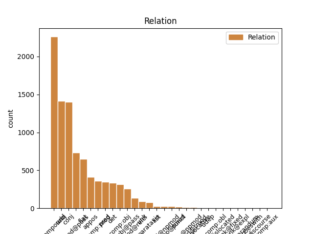
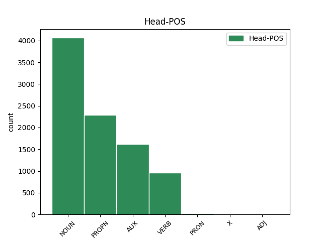
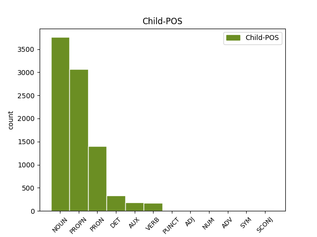

Distribution of features within this leaf



Agreement Rules sorted by frequency.
- When the dependent token is the compound(compound) of the head token, and the head token is NOUN
1 Remove _ _ _ _ 0 _ _ _
2 the _ _ _ _ 0 _ _ _
3 aluminum _ _ _ _ 0 _ _ _
4 foil _ _ _ _ 0 _ _ _
5 from _ _ _ _ 0 _ _ _
6 the _ _ _ _ 0 _ _ _
7 baking baking NOUN NN Number=Sing 8 compound _ _
8 dish dish NOUN NN Number=Sing 0 _ _ _
9 , _ _ _ _ 0 _ _ _
10 add _ _ _ _ 0 _ _ _
11 cheese _ _ _ _ 0 _ _ _
12 or _ _ _ _ 0 _ _ _
13 other _ _ _ _ 0 _ _ _
14 seasonings _ _ _ _ 0 _ _ _
15 , _ _ _ _ 0 _ _ _
16 and _ _ _ _ 0 _ _ _
17 bake _ _ _ _ 0 _ _ _
18 for _ _ _ _ 0 _ _ _
19 an _ _ _ _ 0 _ _ _
20 additional _ _ _ _ 0 _ _ _
21 5 _ _ _ _ 0 _ _ _
22 minutes _ _ _ _ 0 _ _ _
23 . _ _ _ _ 0 _ _ _
1 One _ _ _ _ 0 _ _ _
2 option option NOUN NN Number=Sing 3 subj _ _
3 is be AUX VBZ Mood=Ind|Number=Sing|Person=3|Tense=Pres|VerbForm=Fin 0 _ _ _
4 to _ _ _ _ 0 _ _ _
5 toast _ _ _ _ 0 _ _ _
6 the _ _ _ _ 0 _ _ _
7 quinoa _ _ _ _ 0 _ _ _
8 before _ _ _ _ 0 _ _ _
9 placing _ _ _ _ 0 _ _ _
10 in _ _ _ _ 0 _ _ _
11 the _ _ _ _ 0 _ _ _
12 rice _ _ _ _ 0 _ _ _
13 cooker _ _ _ _ 0 _ _ _
14 . _ _ _ _ 0 _ _ _
1 There _ _ _ _ 0 _ _ _
2 are _ _ _ _ 0 _ _ _
3 many _ _ _ _ 0 _ _ _
4 different _ _ _ _ 0 _ _ _
5 ways _ _ _ _ 0 _ _ _
6 of _ _ _ _ 0 _ _ _
7 playing _ _ _ _ 0 _ _ _
8 Quidditch _ _ _ _ 0 _ _ _
9 , _ _ _ _ 0 _ _ _
10 but _ _ _ _ 0 _ _ _
11 the _ _ _ _ 0 _ _ _
12 most _ _ _ _ 0 _ _ _
13 commonly _ _ _ _ 0 _ _ _
14 used _ _ _ _ 0 _ _ _
15 set _ _ _ _ 0 _ _ _
16 of _ _ _ _ 0 _ _ _
17 rules _ _ _ _ 0 _ _ _
18 are _ _ _ _ 0 _ _ _
19 those _ _ _ _ 0 _ _ _
20 given _ _ _ _ 0 _ _ _
21 by _ _ _ _ 0 _ _ _
22 the _ _ _ _ 0 _ _ _
23 International _ _ _ _ 0 _ _ _
24 Quidditch Quidditch PROPN NNP Number=Sing 25 compound _ _
25 Association Association PROPN NNP Number=Sing 0 _ _ _
26 ( _ _ _ _ 0 _ _ _
27 which _ _ _ _ 0 _ _ _
28 can _ _ _ _ 0 _ _ _
29 be _ _ _ _ 0 _ _ _
30 found _ _ _ _ 0 _ _ _
31 here _ _ _ _ 0 _ _ _
32 ) _ _ _ _ 0 _ _ _
33 . _ _ _ _ 0 _ _ _
1 Add _ _ _ _ 0 _ _ _
2 one _ _ _ _ 0 _ _ _
3 cup cup NOUN NN Number=Sing 0 _ _ _
4 of _ _ _ _ 0 _ _ _
5 broth _ _ _ _ 0 _ _ _
6 and _ _ _ _ 0 _ _ _
7 one _ _ _ _ 0 _ _ _
8 cup cup NOUN NN Number=Sing 3 conj _ _
9 of _ _ _ _ 0 _ _ _
10 water _ _ _ _ 0 _ _ _
11 to _ _ _ _ 0 _ _ _
12 the _ _ _ _ 0 _ _ _
13 saucepan _ _ _ _ 0 _ _ _
14 and _ _ _ _ 0 _ _ _
15 bring _ _ _ _ 0 _ _ _
16 to _ _ _ _ 0 _ _ _
17 a _ _ _ _ 0 _ _ _
18 boil _ _ _ _ 0 _ _ _
19 over _ _ _ _ 0 _ _ _
20 medium _ _ _ _ 0 _ _ _
21 high _ _ _ _ 0 _ _ _
22 heat _ _ _ _ 0 _ _ _
23 . _ _ _ _ 0 _ _ _
1 In _ _ _ _ 0 _ _ _
2 the _ _ _ _ 0 _ _ _
3 Harry _ _ _ _ 0 _ _ _
4 Potter _ _ _ _ 0 _ _ _
5 series _ _ _ _ 0 _ _ _
6 written _ _ _ _ 0 _ _ _
7 by _ _ _ _ 0 _ _ _
8 JK JK PROPN NNP Number=Sing 0 _ _ _
9 Rowling Rowling PROPN NNP Number=Sing 8 flat _ _
10 the _ _ _ _ 0 _ _ _
11 main _ _ _ _ 0 _ _ _
12 wizarding _ _ _ _ 0 _ _ _
13 sport _ _ _ _ 0 _ _ _
14 is _ _ _ _ 0 _ _ _
15 Quidditch _ _ _ _ 0 _ _ _
16 . _ _ _ _ 0 _ _ _
1 Try _ _ _ _ 0 _ _ _
2 the _ _ _ _ 0 _ _ _
3 " _ _ _ _ 0 _ _ _
4 white _ _ _ _ 0 _ _ _
5 rice _ _ _ _ 0 _ _ _
6 " _ _ _ _ 0 _ _ _
7 option _ _ _ _ 0 _ _ _
8 if _ _ _ _ 0 _ _ _
9 your _ _ _ _ 0 _ _ _
10 rice _ _ _ _ 0 _ _ _
11 cooker cooker NOUN NN Number=Sing 12 subj _ _
12 gives give VERB VBZ Mood=Ind|Number=Sing|Person=3|Tense=Pres|VerbForm=Fin 0 _ _ _
13 you _ _ _ _ 0 _ _ _
14 several _ _ _ _ 0 _ _ _
15 options _ _ _ _ 0 _ _ _
16 . _ _ _ _ 0 _ _ _
1 Regardless _ _ _ _ 0 _ _ _
2 of _ _ _ _ 0 _ _ _
3 method _ _ _ _ 0 _ _ _
4 , _ _ _ _ 0 _ _ _
5 the _ _ _ _ 0 _ _ _
6 winning _ _ _ _ 0 _ _ _
7 seeker _ _ _ _ 0 _ _ _
8 wins _ _ _ _ 0 _ _ _
9 30 _ _ _ _ 0 _ _ _
10 points _ _ _ _ 0 _ _ _
11 for _ _ _ _ 0 _ _ _
12 his his PRON PRP$ Gender=Masc|Number=Sing|Person=3|Poss=Yes|PronType=Prs 15 mod@poss _ _
13 or _ _ _ _ 0 _ _ _
14 her _ _ _ _ 0 _ _ _
15 team team NOUN NN Number=Sing 0 _ _ _
16 , _ _ _ _ 0 _ _ _
17 unlike _ _ _ _ 0 _ _ _
18 the _ _ _ _ 0 _ _ _
19 books _ _ _ _ 0 _ _ _
20 , _ _ _ _ 0 _ _ _
21 in _ _ _ _ 0 _ _ _
22 which _ _ _ _ 0 _ _ _
23 the _ _ _ _ 0 _ _ _
24 snitch _ _ _ _ 0 _ _ _
25 is _ _ _ _ 0 _ _ _
26 worth _ _ _ _ 0 _ _ _
27 150 _ _ _ _ 0 _ _ _
28 points _ _ _ _ 0 _ _ _
29 . _ _ _ _ 0 _ _ _
1 If _ _ _ _ 0 _ _ _
2 you _ _ _ _ 0 _ _ _
3 want _ _ _ _ 0 _ _ _
4 to _ _ _ _ 0 _ _ _
5 add _ _ _ _ 0 _ _ _
6 complication _ _ _ _ 0 _ _ _
7 , _ _ _ _ 0 _ _ _
8 you _ _ _ _ 0 _ _ _
9 can _ _ _ _ 0 _ _ _
10 add _ _ _ _ 0 _ _ _
11 genders _ _ _ _ 0 _ _ _
12 like _ _ _ _ 0 _ _ _
13 most _ _ _ _ 0 _ _ _
14 European _ _ _ _ 0 _ _ _
15 languages _ _ _ _ 0 _ _ _
16 like _ _ _ _ 0 _ _ _
17 French French PROPN NNP Number=Sing 0 _ _ _
18 and _ _ _ _ 0 _ _ _
19 German German PROPN NNP Number=Sing 17 conj _ SpaceAfter=No
20 . _ _ _ _ 0 _ _ _
1 Another _ _ _ _ 0 _ _ _
2 variation _ _ _ _ 0 _ _ _
3 is _ _ _ _ 0 _ _ _
4 where _ _ _ _ 0 _ _ _
5 the _ _ _ _ 0 _ _ _
6 referee _ _ _ _ 0 _ _ _
7 places _ _ _ _ 0 _ _ _
8 the _ _ _ _ 0 _ _ _
9 snitch _ _ _ _ 0 _ _ _
10 somewhere _ _ _ _ 0 _ _ _
11 in _ _ _ _ 0 _ _ _
12 the _ _ _ _ 0 _ _ _
13 field _ _ _ _ 0 _ _ _
14 ( _ _ _ _ 0 _ _ _
15 in _ _ _ _ 0 _ _ _
16 this _ _ _ _ 0 _ _ _
17 case _ _ _ _ 0 _ _ _
18 it _ _ _ _ 0 _ _ _
19 's be AUX VBZ Mood=Ind|Number=Sing|Person=3|Tense=Pres|VerbForm=Fin 0 _ _ _
20 a _ _ _ _ 0 _ _ _
21 small _ _ _ _ 0 _ _ _
22 ball ball NOUN NN Number=Sing 19 comp:pred _ SpaceAfter=No
23 ) _ _ _ _ 0 _ _ _
24 . _ _ _ _ 0 _ _ _
1 If _ _ _ _ 0 _ _ _
2 you _ _ _ _ 0 _ _ _
3 bought _ _ _ _ 0 _ _ _
4 packaged _ _ _ _ 0 _ _ _
5 quinoa _ _ _ _ 0 _ _ _
6 , _ _ _ _ 0 _ _ _
7 this this DET DT Number=Sing|PronType=Dem 8 det _ _
8 step step NOUN NN Number=Sing 0 _ _ _
9 is _ _ _ _ 0 _ _ _
10 n't _ _ _ _ 0 _ _ _
11 always _ _ _ _ 0 _ _ _
12 necessary _ _ _ _ 0 _ _ _
13 , _ _ _ _ 0 _ _ _
14 but _ _ _ _ 0 _ _ _
15 it _ _ _ _ 0 _ _ _
16 's _ _ _ _ 0 _ _ _
17 better _ _ _ _ 0 _ _ _
18 to _ _ _ _ 0 _ _ _
19 be _ _ _ _ 0 _ _ _
20 safe _ _ _ _ 0 _ _ _
21 than _ _ _ _ 0 _ _ _
22 sorry _ _ _ _ 0 _ _ _
23 . _ _ _ _ 0 _ _ _
1 Once _ _ _ _ 0 _ _ _
2 a _ _ _ _ 0 _ _ _
3 boil boil NOUN NN Number=Sing 4 subj@pass _ _
4 is be AUX VBZ Mood=Ind|Number=Sing|Person=3|Tense=Pres|VerbForm=Fin 0 _ _ _
5 reached _ _ _ _ 0 _ _ _
6 , _ _ _ _ 0 _ _ _
7 transfer _ _ _ _ 0 _ _ _
8 quinoa _ _ _ _ 0 _ _ _
9 to _ _ _ _ 0 _ _ _
10 a _ _ _ _ 0 _ _ _
11 8-by-8-inch _ _ _ _ 0 _ _ _
12 baking _ _ _ _ 0 _ _ _
13 dish _ _ _ _ 0 _ _ _
14 . _ _ _ _ 0 _ _ _
15 [ _ _ _ _ 0 _ _ _
16 2 _ _ _ _ 0 _ _ _
17 ] _ _ _ _ 0 _ _ _
1 Simmer _ _ _ _ 0 _ _ _
2 the _ _ _ _ 0 _ _ _
3 quinoa _ _ _ _ 0 _ _ _
4 for _ _ _ _ 0 _ _ _
5 about _ _ _ _ 0 _ _ _
6 15 _ _ _ _ 0 _ _ _
7 minutes _ _ _ _ 0 _ _ _
8 or _ _ _ _ 0 _ _ _
9 until _ _ _ _ 0 _ _ _
10 the _ _ _ _ 0 _ _ _
11 grain _ _ _ _ 0 _ _ _
12 becomes _ _ _ _ 0 _ _ _
13 translucent _ _ _ _ 0 _ _ _
14 and _ _ _ _ 0 _ _ _
15 the _ _ _ _ 0 _ _ _
16 white _ _ _ _ 0 _ _ _
17 germ _ _ _ _ 0 _ _ _
18 forms form VERB VBZ Mood=Ind|Number=Sing|Person=3|Tense=Pres|VerbForm=Fin 0 _ _ _
19 a _ _ _ _ 0 _ _ _
20 visible _ _ _ _ 0 _ _ _
21 spiral spiral NOUN NN Number=Sing 18 comp:obj _ _
22 on _ _ _ _ 0 _ _ _
23 the _ _ _ _ 0 _ _ _
24 exterior _ _ _ _ 0 _ _ _
25 of _ _ _ _ 0 _ _ _
26 the _ _ _ _ 0 _ _ _
27 quinoa _ _ _ _ 0 _ _ _
28 grain _ _ _ _ 0 _ _ _
29 . _ _ _ _ 0 _ _ _
1 There _ _ _ _ 0 _ _ _
2 are _ _ _ _ 0 _ _ _
3 many _ _ _ _ 0 _ _ _
4 different _ _ _ _ 0 _ _ _
5 ways _ _ _ _ 0 _ _ _
6 of _ _ _ _ 0 _ _ _
7 playing _ _ _ _ 0 _ _ _
8 Quidditch _ _ _ _ 0 _ _ _
9 , _ _ _ _ 0 _ _ _
10 but _ _ _ _ 0 _ _ _
11 the _ _ _ _ 0 _ _ _
12 most _ _ _ _ 0 _ _ _
13 commonly _ _ _ _ 0 _ _ _
14 used _ _ _ _ 0 _ _ _
15 set _ _ _ _ 0 _ _ _
16 of _ _ _ _ 0 _ _ _
17 rules _ _ _ _ 0 _ _ _
18 are _ _ _ _ 0 _ _ _
19 those _ _ _ _ 0 _ _ _
20 given _ _ _ _ 0 _ _ _
21 by _ _ _ _ 0 _ _ _
22 the _ _ _ _ 0 _ _ _
23 International International PROPN NNP Number=Sing 25 mod _ _
24 Quidditch _ _ _ _ 0 _ _ _
25 Association Association PROPN NNP Number=Sing 0 _ _ _
26 ( _ _ _ _ 0 _ _ _
27 which _ _ _ _ 0 _ _ _
28 can _ _ _ _ 0 _ _ _
29 be _ _ _ _ 0 _ _ _
30 found _ _ _ _ 0 _ _ _
31 here _ _ _ _ 0 _ _ _
32 ) _ _ _ _ 0 _ _ _
33 . _ _ _ _ 0 _ _ _
1 Preheat _ _ _ _ 0 _ _ _
2 oven _ _ _ _ 0 _ _ _
3 to _ _ _ _ 0 _ _ _
4 350 _ _ _ _ 0 _ _ _
5 ° ° NOUN NNS Number=Plur 0 _ _ _
6 F _ _ _ _ 0 _ _ _
7 ( _ _ _ _ 0 _ _ _
8 177 _ _ _ _ 0 _ _ _
9 ° ° NOUN NNS Number=Plur 5 appos _ _
10 C _ _ _ _ 0 _ _ _
11 ) _ _ _ _ 0 _ _ _
12 . _ _ _ _ 0 _ _ _
1 St St PROPN NNP Number=Sing 0 _ _ _
2 Jude _ _ _ _ 0 _ _ _
3 , _ _ _ _ 0 _ _ _
4 the _ _ _ _ 0 _ _ _
5 patron _ _ _ _ 0 _ _ _
6 saint saint NOUN NN Number=Sing 1 appos _ _
7 of _ _ _ _ 0 _ _ _
8 Lost _ _ _ _ 0 _ _ _
9 Causes _ _ _ _ 0 _ _ _
10 , _ _ _ _ 0 _ _ _
11 comes _ _ _ _ 0 _ _ _
12 to _ _ _ _ 0 _ _ _
13 mind _ _ _ _ 0 _ _ _
14 . _ _ _ _ 0 _ _ _
1 When _ _ _ _ 0 _ _ _
2 you _ _ _ _ 0 _ _ _
3 have _ _ _ _ 0 _ _ _
4 a _ _ _ _ 0 _ _ _
5 looming _ _ _ _ 0 _ _ _
6 project project NOUN NN Number=Sing 0 _ _ _
7 that _ _ _ _ 0 _ _ _
8 's be AUX VBZ Mood=Ind|Number=Sing|Person=3|Tense=Pres|VerbForm=Fin 6 mod@relcl _ _
9 bogging _ _ _ _ 0 _ _ _
10 you _ _ _ _ 0 _ _ _
11 down _ _ _ _ 0 _ _ _
12 and _ _ _ _ 0 _ _ _
13 making _ _ _ _ 0 _ _ _
14 you _ _ _ _ 0 _ _ _
15 unproductive _ _ _ _ 0 _ _ _
16 in _ _ _ _ 0 _ _ _
17 other _ _ _ _ 0 _ _ _
18 areas _ _ _ _ 0 _ _ _
19 , _ _ _ _ 0 _ _ _
20 tackle _ _ _ _ 0 _ _ _
21 it _ _ _ _ 0 _ _ _
22 first _ _ _ _ 0 _ _ _
23 . _ _ _ _ 0 _ _ _
1 If _ _ _ _ 0 _ _ _
2 you _ _ _ _ 0 _ _ _
3 bought _ _ _ _ 0 _ _ _
4 packaged _ _ _ _ 0 _ _ _
5 quinoa _ _ _ _ 0 _ _ _
6 , _ _ _ _ 0 _ _ _
7 this _ _ _ _ 0 _ _ _
8 step _ _ _ _ 0 _ _ _
9 is be AUX VBZ Mood=Ind|Number=Sing|Person=3|Tense=Pres|VerbForm=Fin 0 _ _ _
10 n't _ _ _ _ 0 _ _ _
11 always _ _ _ _ 0 _ _ _
12 necessary _ _ _ _ 0 _ _ _
13 , _ _ _ _ 0 _ _ _
14 but _ _ _ _ 0 _ _ _
15 it _ _ _ _ 0 _ _ _
16 's be AUX VBZ Mood=Ind|Number=Sing|Person=3|Tense=Pres|VerbForm=Fin 9 conj _ _
17 better _ _ _ _ 0 _ _ _
18 to _ _ _ _ 0 _ _ _
19 be _ _ _ _ 0 _ _ _
20 safe _ _ _ _ 0 _ _ _
21 than _ _ _ _ 0 _ _ _
22 sorry _ _ _ _ 0 _ _ _
23 . _ _ _ _ 0 _ _ _
1 Andrzej _ _ _ _ 0 _ _ _
2 Wajda _ _ _ _ 0 _ _ _
3 's _ _ _ _ 0 _ _ _
4 movie _ _ _ _ 0 _ _ _
5 , _ _ _ _ 0 _ _ _
6 Promised _ _ _ _ 0 _ _ _
7 Land _ _ _ _ 0 _ _ _
8 based _ _ _ _ 0 _ _ _
9 on _ _ _ _ 0 _ _ _
10 a _ _ _ _ 0 _ _ _
11 novel _ _ _ _ 0 _ _ _
12 by _ _ _ _ 0 _ _ _
13 the _ _ _ _ 0 _ _ _
14 Nobel _ _ _ _ 0 _ _ _
15 laureate laureate NOUN NN Number=Sing 0 _ _ _
16 Władysław _ _ _ _ 0 _ _ _
17 Reymont Reymont PROPN NNP Number=Sing 15 flat _ SpaceAfter=No
18 , _ _ _ _ 0 _ _ _
19 depicts _ _ _ _ 0 _ _ _
20 those _ _ _ _ 0 _ _ _
21 times _ _ _ _ 0 _ _ _
22 and _ _ _ _ 0 _ _ _
23 is _ _ _ _ 0 _ _ _
24 a _ _ _ _ 0 _ _ _
25 worthwhile _ _ _ _ 0 _ _ _
26 introduction _ _ _ _ 0 _ _ _
27 to _ _ _ _ 0 _ _ _
28 the _ _ _ _ 0 _ _ _
29 city _ _ _ _ 0 _ _ _
30 's _ _ _ _ 0 _ _ _
31 bustling _ _ _ _ 0 _ _ _
32 history _ _ _ _ 0 _ _ _
33 . _ _ _ _ 0 _ _ _
1 Simmer _ _ _ _ 0 _ _ _
2 the _ _ _ _ 0 _ _ _
3 quinoa _ _ _ _ 0 _ _ _
4 for _ _ _ _ 0 _ _ _
5 about _ _ _ _ 0 _ _ _
6 15 _ _ _ _ 0 _ _ _
7 minutes _ _ _ _ 0 _ _ _
8 or _ _ _ _ 0 _ _ _
9 until _ _ _ _ 0 _ _ _
10 the _ _ _ _ 0 _ _ _
11 grain _ _ _ _ 0 _ _ _
12 becomes become VERB VBZ Mood=Ind|Number=Sing|Person=3|Tense=Pres|VerbForm=Fin 0 _ _ _
13 translucent _ _ _ _ 0 _ _ _
14 and _ _ _ _ 0 _ _ _
15 the _ _ _ _ 0 _ _ _
16 white _ _ _ _ 0 _ _ _
17 germ _ _ _ _ 0 _ _ _
18 forms form VERB VBZ Mood=Ind|Number=Sing|Person=3|Tense=Pres|VerbForm=Fin 12 conj _ _
19 a _ _ _ _ 0 _ _ _
20 visible _ _ _ _ 0 _ _ _
21 spiral _ _ _ _ 0 _ _ _
22 on _ _ _ _ 0 _ _ _
23 the _ _ _ _ 0 _ _ _
24 exterior _ _ _ _ 0 _ _ _
25 of _ _ _ _ 0 _ _ _
26 the _ _ _ _ 0 _ _ _
27 quinoa _ _ _ _ 0 _ _ _
28 grain _ _ _ _ 0 _ _ _
29 . _ _ _ _ 0 _ _ _
1 therefore _ _ _ _ 0 _ _ _
2 , _ _ _ _ 0 _ _ _
3 it _ _ _ _ 0 _ _ _
4 may _ _ _ _ 0 _ _ _
5 be _ _ _ _ 0 _ _ _
6 helpful _ _ _ _ 0 _ _ _
7 to _ _ _ _ 0 _ _ _
8 focus _ _ _ _ 0 _ _ _
9 your _ _ _ _ 0 _ _ _
10 efforts _ _ _ _ 0 _ _ _
11 on _ _ _ _ 0 _ _ _
12 opening _ _ _ _ 0 _ _ _
13 your _ _ _ _ 0 _ _ _
14 reserve reserve NOUN NN Number=Sing 15 mod _ _
15 parachute parachute NOUN NN Number=Sing 0 _ _ _
16 . _ _ _ _ 0 _ _ _
1 Watch _ _ _ _ 0 _ _ _
2 out _ _ _ _ 0 _ _ _
3 for _ _ _ _ 0 _ _ _
4 Place _ _ _ _ 0 _ _ _
5 , _ _ _ _ 0 _ _ _
6 Street _ _ _ _ 0 _ _ _
7 , _ _ _ _ 0 _ _ _
8 Avenue _ _ _ _ 0 _ _ _
9 designation designation NOUN NN Number=Sing 0 _ _ _
10 , _ _ _ _ 0 _ _ _
11 e.g. _ _ _ _ 0 _ _ _
12 47th _ _ _ _ 0 _ _ _
13 Place Place PROPN NNP Number=Sing 9 unk _ SpaceAfter=No
14 , _ _ _ _ 0 _ _ _
15 47th _ _ _ _ 0 _ _ _
16 Street _ _ _ _ 0 _ _ _
17 , _ _ _ _ 0 _ _ _
18 or _ _ _ _ 0 _ _ _
19 Florence _ _ _ _ 0 _ _ _
20 Place _ _ _ _ 0 _ _ _
21 , _ _ _ _ 0 _ _ _
22 Florence _ _ _ _ 0 _ _ _
23 Avenue _ _ _ _ 0 _ _ _
24 . _ _ _ _ 0 _ _ _
1 Some _ _ _ _ 0 _ _ _
2 of _ _ _ _ 0 _ _ _
3 this _ _ _ _ 0 _ _ _
4 stuff _ _ _ _ 0 _ _ _
5 is be AUX VBZ Mood=Ind|Number=Sing|Person=3|Tense=Pres|VerbForm=Fin 0 _ _ _
6 dangerous _ _ _ _ 0 _ _ _
7 -- _ _ _ _ 0 _ _ _
8 this _ _ _ _ 0 _ _ _
9 experiment _ _ _ _ 0 _ _ _
10 is be AUX VBZ Mood=Ind|Number=Sing|Person=3|Tense=Pres|VerbForm=Fin 5 parataxis _ _
11 not _ _ _ _ 0 _ _ _
12 meant _ _ _ _ 0 _ _ _
13 for _ _ _ _ 0 _ _ _
14 children _ _ _ _ 0 _ _ _
15 ! _ _ _ _ 0 _ _ _
1 Paseo paseo PROPN NNP Number=Sing 0 _ _ _
2 de _ _ _ _ 0 _ _ _
3 Montejo _ _ _ _ 0 _ _ _
4 Information _ _ _ _ 0 _ _ _
5 Module _ _ _ _ 0 _ _ _
6 ( _ _ _ _ 0 _ _ _
7 Módulo _ _ _ _ 0 _ _ _
8 de _ _ _ _ 0 _ _ _
9 Información _ _ _ _ 0 _ _ _
10 Turística _ _ _ _ 0 _ _ _
11 Paseo _ _ _ _ 0 _ _ _
12 de _ _ _ _ 0 _ _ _
13 Montejo _ _ _ _ 0 _ _ _
14 ) _ _ _ _ 0 _ _ _
15 Ave _ _ _ _ 0 _ _ _
16 Paseo _ _ _ _ 0 _ _ _
17 de _ _ _ _ 0 _ _ _
18 Montejo _ _ _ _ 0 _ _ _
19 56A _ _ _ _ 0 _ _ _
20 x _ _ _ _ 0 _ _ _
21 33A _ _ _ _ 0 _ _ _
22 ☎ _ _ _ _ 0 _ _ _
23 + _ _ _ _ 0 _ _ _
24 529999204044 _ _ _ _ 0 _ _ _
25 e-mail _ _ _ _ 0 _ _ _
26 : _ _ _ _ 0 _ _ _
27 turismo@merida.gob.mx turismo@merida.gob.mx NOUN NN Number=Sing 1 list _ SpaceAfter=No
28 . _ _ _ _ 0 _ _ _
1 There _ _ _ _ 0 _ _ _
2 are _ _ _ _ 0 _ _ _
3 perennial _ _ _ _ 0 _ _ _
4 basils _ _ _ _ 0 _ _ _
5 which _ _ _ _ 0 _ _ _
6 come _ _ _ _ 0 _ _ _
7 back _ _ _ _ 0 _ _ _
8 year _ _ _ _ 0 _ _ _
9 after _ _ _ _ 0 _ _ _
10 year _ _ _ _ 0 _ _ _
11 , _ _ _ _ 0 _ _ _
12 like _ _ _ _ 0 _ _ _
13 African _ _ _ _ 0 _ _ _
14 Blue _ _ _ _ 0 _ _ _
15 Basil basil PROPN NNP Number=Sing 0 _ _ _
16 ( _ _ _ _ 0 _ _ _
17 which _ _ _ _ 0 _ _ _
18 has have VERB VBZ Mood=Ind|Number=Sing|Person=3|Tense=Pres|VerbForm=Fin 15 unk _ _
19 pretty _ _ _ _ 0 _ _ _
20 blue _ _ _ _ 0 _ _ _
21 veins _ _ _ _ 0 _ _ _
22 on _ _ _ _ 0 _ _ _
23 its _ _ _ _ 0 _ _ _
24 leaves _ _ _ _ 0 _ _ _
25 ) _ _ _ _ 0 _ _ _
26 and _ _ _ _ 0 _ _ _
27 Thai _ _ _ _ 0 _ _ _
28 Basil _ _ _ _ 0 _ _ _
29 , _ _ _ _ 0 _ _ _
30 while _ _ _ _ 0 _ _ _
31 most _ _ _ _ 0 _ _ _
32 other _ _ _ _ 0 _ _ _
33 varieties _ _ _ _ 0 _ _ _
34 are _ _ _ _ 0 _ _ _
35 annuals _ _ _ _ 0 _ _ _
36 , _ _ _ _ 0 _ _ _
37 which _ _ _ _ 0 _ _ _
38 you _ _ _ _ 0 _ _ _
39 'll _ _ _ _ 0 _ _ _
40 have _ _ _ _ 0 _ _ _
41 to _ _ _ _ 0 _ _ _
42 plant _ _ _ _ 0 _ _ _
43 year _ _ _ _ 0 _ _ _
44 after _ _ _ _ 0 _ _ _
45 year _ _ _ _ 0 _ _ _
46 . _ _ _ _ 0 _ _ _
1 Tourist _ _ _ _ 0 _ _ _
2 Information Information PROPN NNP Number=Sing 0 _ _ _
3 ( _ _ _ _ 0 _ _ _
4 Turismo _ _ _ _ 0 _ _ _
5 Mérida _ _ _ _ 0 _ _ _
6 ) _ _ _ _ 0 _ _ _
7 , _ _ _ _ 0 _ _ _
8 email email NOUN NN Number=Sing 2 parataxis _ SpaceAfter=No
9 : _ _ _ _ 0 _ _ _
10 turismo@merida.gob.mx _ _ _ _ 0 _ _ _
11 . _ _ _ _ 0 _ _ _
1 If _ _ _ _ 0 _ _ _
2 desired _ _ _ _ 0 _ _ _
3 , _ _ _ _ 0 _ _ _
4 the _ _ _ _ 0 _ _ _
5 snitch _ _ _ _ 0 _ _ _
6 is _ _ _ _ 0 _ _ _
7 able _ _ _ _ 0 _ _ _
8 to _ _ _ _ 0 _ _ _
9 do _ _ _ _ 0 _ _ _
10 whatever _ _ _ _ 0 _ _ _
11 he he PRON PRP Case=Nom|Gender=Masc|Number=Sing|Person=3|PronType=Prs 0 _ _ _
12 or _ _ _ _ 0 _ _ _
13 she she PRON PRP Case=Nom|Gender=Fem|Number=Sing|Person=3|PronType=Prs 11 conj _ _
14 wants _ _ _ _ 0 _ _ _
15 to _ _ _ _ 0 _ _ _
16 avoid _ _ _ _ 0 _ _ _
17 capture _ _ _ _ 0 _ _ _
18 . _ _ _ _ 0 _ _ _
1 Basil _ _ _ _ 0 _ _ _
2 needs need VERB VBZ Mood=Ind|Number=Sing|Person=3|Tense=Pres|VerbForm=Fin 0 _ _ _
3 warm _ _ _ _ 0 _ _ _
4 air _ _ _ _ 0 _ _ _
5 and _ _ _ _ 0 _ _ _
6 sun _ _ _ _ 0 _ _ _
7 to _ _ _ _ 0 _ _ _
8 do _ _ _ _ 0 _ _ _
9 well _ _ _ _ 0 _ _ _
10 , _ _ _ _ 0 _ _ _
11 so _ _ _ _ 0 _ _ _
12 it _ _ _ _ 0 _ _ _
13 's be AUX VBZ Mood=Ind|Number=Sing|Person=3|Tense=Pres|VerbForm=Fin 2 parataxis _ _
14 often _ _ _ _ 0 _ _ _
15 easiest _ _ _ _ 0 _ _ _
16 to _ _ _ _ 0 _ _ _
17 start _ _ _ _ 0 _ _ _
18 the _ _ _ _ 0 _ _ _
19 seeds _ _ _ _ 0 _ _ _
20 indoors _ _ _ _ 0 _ _ _
21 instead _ _ _ _ 0 _ _ _
22 of _ _ _ _ 0 _ _ _
23 risking _ _ _ _ 0 _ _ _
24 that _ _ _ _ 0 _ _ _
25 they _ _ _ _ 0 _ _ _
26 'll _ _ _ _ 0 _ _ _
27 get _ _ _ _ 0 _ _ _
28 damaged _ _ _ _ 0 _ _ _
29 by _ _ _ _ 0 _ _ _
30 frost _ _ _ _ 0 _ _ _
31 . _ _ _ _ 0 _ _ _
1 There _ _ _ _ 0 _ _ _
2 is _ _ _ _ 0 _ _ _
3 also _ _ _ _ 0 _ _ _
4 the _ _ _ _ 0 _ _ _
5 Desert _ _ _ _ 0 _ _ _
6 Rose Rose PROPN NNP Number=Sing 0 _ _ _
7 ( _ _ _ _ 0 _ _ _
8 adenium _ _ _ _ 0 _ _ _
9 obesium _ _ _ _ 0 _ _ _
10 ) _ _ _ _ 0 _ _ _
11 which _ _ _ _ 0 _ _ _
12 looks look VERB VBZ Mood=Ind|Number=Sing|Person=3|Tense=Pres|VerbForm=Fin 6 mod@relcl _ _
13 like _ _ _ _ 0 _ _ _
14 a _ _ _ _ 0 _ _ _
15 blooming _ _ _ _ 0 _ _ _
16 elephant _ _ _ _ 0 _ _ _
17 leg _ _ _ _ 0 _ _ _
18 . _ _ _ _ 0 _ _ _
1 Use _ _ _ _ 0 _ _ _
2 a _ _ _ _ 0 _ _ _
3 room _ _ _ _ 0 _ _ _
4 that _ _ _ _ 0 _ _ _
5 is be AUX VBZ Mood=Ind|Number=Sing|Person=3|Tense=Pres|VerbForm=Fin 0 _ _ _
6 n't _ _ _ _ 0 _ _ _
7 used _ _ _ _ 0 _ _ _
8 every _ _ _ _ 0 _ _ _
9 day day NOUN NN Number=Sing 5 udep@tmod _ _
10 such _ _ _ _ 0 _ _ _
11 as _ _ _ _ 0 _ _ _
12 the _ _ _ _ 0 _ _ _
13 formal _ _ _ _ 0 _ _ _
14 dining _ _ _ _ 0 _ _ _
15 or _ _ _ _ 0 _ _ _
16 living _ _ _ _ 0 _ _ _
17 room _ _ _ _ 0 _ _ _
18 . _ _ _ _ 0 _ _ _
1 1/2 _ _ _ _ 0 _ _ _
2 teaspoon teaspoon NOUN NN Number=Sing 3 mod@npmod _ _
3 salt salt NOUN NN Number=Sing 0 _ _ _
4 ( _ _ _ _ 0 _ _ _
5 Optional _ _ _ _ 0 _ _ _
6 ) _ _ _ _ 0 _ _ _
1 if _ _ _ _ 0 _ _ _
2 this _ _ _ _ 0 _ _ _
3 seems _ _ _ _ 0 _ _ _
4 incredibly _ _ _ _ 0 _ _ _
5 far-fetched _ _ _ _ 0 _ _ _
6 , _ _ _ _ 0 _ _ _
7 comfort comfort NOUN NN Number=Sing 0 _ _ _
8 yourself yourself PRON PRP Case=Acc|Number=Sing|Person=2|PronType=Prs|Reflex=Yes 7 comp:obj _ _
9 that _ _ _ _ 0 _ _ _
10 double _ _ _ _ 0 _ _ _
11 chute _ _ _ _ 0 _ _ _
12 failure _ _ _ _ 0 _ _ _
13 in _ _ _ _ 0 _ _ _
14 modern _ _ _ _ 0 _ _ _
15 times _ _ _ _ 0 _ _ _
16 is _ _ _ _ 0 _ _ _
17 also _ _ _ _ 0 _ _ _
18 extremely _ _ _ _ 0 _ _ _
19 unlikely _ _ _ _ 0 _ _ _
20 , _ _ _ _ 0 _ _ _
21 and _ _ _ _ 0 _ _ _
22 that _ _ _ _ 0 _ _ _
23 you _ _ _ _ 0 _ _ _
24 have _ _ _ _ 0 _ _ _
25 already _ _ _ _ 0 _ _ _
26 beaten _ _ _ _ 0 _ _ _
27 worse _ _ _ _ 0 _ _ _
28 odds _ _ _ _ 0 _ _ _
29 . _ _ _ _ 0 _ _ _
1 Tulsa _ _ _ _ 0 _ _ _
2 lies _ _ _ _ 0 _ _ _
3 in _ _ _ _ 0 _ _ _
4 northeastern _ _ _ _ 0 _ _ _
5 Oklahoma _ _ _ _ 0 _ _ _
6 , _ _ _ _ 0 _ _ _
7 at _ _ _ _ 0 _ _ _
8 the _ _ _ _ 0 _ _ _
9 convergence _ _ _ _ 0 _ _ _
10 of _ _ _ _ 0 _ _ _
11 the _ _ _ _ 0 _ _ _
12 Great _ _ _ _ 0 _ _ _
13 Plains _ _ _ _ 0 _ _ _
14 and _ _ _ _ 0 _ _ _
15 the _ _ _ _ 0 _ _ _
16 Ozark _ _ _ _ 0 _ _ _
17 Plateau _ _ _ _ 0 _ _ _
18 , _ _ _ _ 0 _ _ _
19 and _ _ _ _ 0 _ _ _
20 receives receive VERB VBZ Mood=Ind|Number=Sing|Person=3|Tense=Pres|VerbForm=Fin 0 _ _ _
21 an _ _ _ _ 0 _ _ _
22 average _ _ _ _ 0 _ _ _
23 of _ _ _ _ 0 _ _ _
24 40 _ _ _ _ 0 _ _ _
25 inches _ _ _ _ 0 _ _ _
26 of _ _ _ _ 0 _ _ _
27 precipitation _ _ _ _ 0 _ _ _
28 each _ _ _ _ 0 _ _ _
29 year year NOUN NN Number=Sing 20 udep@tmod _ SpaceAfter=No
30 , _ _ _ _ 0 _ _ _
31 both _ _ _ _ 0 _ _ _
32 of _ _ _ _ 0 _ _ _
33 which _ _ _ _ 0 _ _ _
34 account _ _ _ _ 0 _ _ _
35 for _ _ _ _ 0 _ _ _
36 its _ _ _ _ 0 _ _ _
37 abundant _ _ _ _ 0 _ _ _
38 beautiful _ _ _ _ 0 _ _ _
39 rolling _ _ _ _ 0 _ _ _
40 green _ _ _ _ 0 _ _ _
41 terrain _ _ _ _ 0 _ _ _
42 . _ _ _ _ 0 _ _ _
1 This _ _ _ _ 0 _ _ _
2 error _ _ _ _ 0 _ _ _
3 causes _ _ _ _ 0 _ _ _
4 the _ _ _ _ 0 _ _ _
5 incorrect _ _ _ _ 0 _ _ _
6 display _ _ _ _ 0 _ _ _
7 of _ _ _ _ 0 _ _ _
8 the _ _ _ _ 0 _ _ _
9 resulting _ _ _ _ 0 _ _ _
10 geometry _ _ _ _ 0 _ _ _
11 that _ _ _ _ 0 _ _ _
12 should _ _ _ _ 0 _ _ _
13 be _ _ _ _ 0 _ _ _
14 drawn _ _ _ _ 0 _ _ _
15 in _ _ _ _ 0 _ _ _
16 the _ _ _ _ 0 _ _ _
17 user _ _ _ _ 0 _ _ _
18 interface _ _ _ _ 0 _ _ _
19 after _ _ _ _ 0 _ _ _
20 the _ _ _ _ 0 _ _ _
21 operation _ _ _ _ 0 _ _ _
22 applied _ _ _ _ 0 _ _ _
23 to _ _ _ _ 0 _ _ _
24 the _ _ _ _ 0 _ _ _
25 two _ _ _ _ 0 _ _ _
26 initial _ _ _ _ 0 _ _ _
27 geometries _ _ _ _ 0 _ _ _
28 ( _ _ _ _ 0 _ _ _
29 Figure figure NOUN NN Number=Sing 0 _ _ _
30 2 _ _ _ _ 0 _ _ _
31 ) ) PUNCT -RRB- Number=Sing 29 punct _ SpaceAfter=No
32 . _ _ _ _ 0 _ _ _
1 Fort Fort PROPN NNP Number=Sing 5 mod@poss _ _
2 Lee _ _ _ _ 0 _ _ _
3 's _ _ _ _ 0 _ _ _
4 Public _ _ _ _ 0 _ _ _
5 School School PROPN NNP Number=Sing 0 _ _ _
6 4 _ _ _ _ 0 _ _ _
7 , _ _ _ _ 0 _ _ _
8 a _ _ _ _ 0 _ _ _
9 daily _ _ _ _ 0 _ _ _
10 activity _ _ _ _ 0 _ _ _
11 for _ _ _ _ 0 _ _ _
12 the _ _ _ _ 0 _ _ _
13 elementary _ _ _ _ 0 _ _ _
14 school _ _ _ _ 0 _ _ _
15 set _ _ _ _ 0 _ _ _
1 This _ _ _ _ 0 _ _ _
2 makes make VERB VBZ Mood=Ind|Number=Sing|Person=3|Tense=Pres|VerbForm=Fin 0 _ _ _
3 your _ _ _ _ 0 _ _ _
4 first _ _ _ _ 0 _ _ _
5 language language NOUN NN Number=Sing 2 unk _ _
6 a _ _ _ _ 0 _ _ _
7 proto-language _ _ _ _ 0 _ _ _
8 — _ _ _ _ 0 _ _ _
9 a _ _ _ _ 0 _ _ _
10 language _ _ _ _ 0 _ _ _
11 that _ _ _ _ 0 _ _ _
12 branches _ _ _ _ 0 _ _ _
13 off _ _ _ _ 0 _ _ _
14 into _ _ _ _ 0 _ _ _
15 a _ _ _ _ 0 _ _ _
16 family _ _ _ _ 0 _ _ _
17 of _ _ _ _ 0 _ _ _
18 languages _ _ _ _ 0 _ _ _
19 . _ _ _ _ 0 _ _ _
1 Also _ _ _ _ 0 _ _ _
2 , _ _ _ _ 0 _ _ _
3 not _ _ _ _ 0 _ _ _
4 mentioned _ _ _ _ 0 _ _ _
5 on _ _ _ _ 0 _ _ _
6 Microsoft _ _ _ _ 0 _ _ _
7 's _ _ _ _ 0 _ _ _
8 " _ _ _ _ 0 _ _ _
9 The the DET NNP Number=Sing 13 det _ _
10 Internet _ _ _ _ 0 _ _ _
11 Explorer _ _ _ _ 0 _ _ _
12 6 _ _ _ _ 0 _ _ _
13 Countdown countdown PROPN NNP Number=Sing 0 _ _ _
14 " _ _ _ _ 0 _ _ _
15 site _ _ _ _ 0 _ _ _
16 , _ _ _ _ 0 _ _ _
17 are _ _ _ _ 0 _ _ _
18 the _ _ _ _ 0 _ _ _
19 numerous _ _ _ _ 0 _ _ _
20 security _ _ _ _ 0 _ _ _
21 vulnerabilities _ _ _ _ 0 _ _ _
22 putting _ _ _ _ 0 _ _ _
23 the _ _ _ _ 0 _ _ _
24 browser _ _ _ _ 0 _ _ _
25 at _ _ _ _ 0 _ _ _
26 risk _ _ _ _ 0 _ _ _
27 of _ _ _ _ 0 _ _ _
28 being _ _ _ _ 0 _ _ _
29 hacked _ _ _ _ 0 _ _ _
30 . _ _ _ _ 0 _ _ _
1 Even _ _ _ _ 0 _ _ _
2 though _ _ _ _ 0 _ _ _
3 I _ _ _ _ 0 _ _ _
4 m _ _ _ _ 0 _ _ _
5 not _ _ _ _ 0 _ _ _
6 Michael _ _ _ _ 0 _ _ _
7 Jackson _ _ _ _ 0 _ _ _
8 or _ _ _ _ 0 _ _ _
9 somebody _ _ _ _ 0 _ _ _
10 , _ _ _ _ 0 _ _ _
11 when _ _ _ _ 0 _ _ _
12 people _ _ _ _ 0 _ _ _
13 come _ _ _ _ 0 _ _ _
14 up _ _ _ _ 0 _ _ _
15 to _ _ _ _ 0 _ _ _
16 me _ _ _ _ 0 _ _ _
17 and _ _ _ _ 0 _ _ _
18 introduce _ _ _ _ 0 _ _ _
19 themselves _ _ _ _ 0 _ _ _
20 and _ _ _ _ 0 _ _ _
21 say _ _ _ _ 0 _ _ _
22 , _ _ _ _ 0 _ _ _
23 ' _ _ _ _ 0 _ _ _
24 Hey _ _ _ _ 0 _ _ _
25 Frank _ _ _ _ 0 _ _ _
26 , _ _ _ _ 0 _ _ _
27 my _ _ _ _ 0 _ _ _
28 name _ _ _ _ 0 _ _ _
29 is _ _ _ _ 0 _ _ _
30 John _ _ _ _ 0 _ _ _
31 , _ _ _ _ 0 _ _ _
32 ' _ _ _ _ 0 _ _ _
33 I _ _ _ _ 0 _ _ _
34 say _ _ _ _ 0 _ _ _
35 , _ _ _ _ 0 _ _ _
36 ' _ _ _ _ 0 _ _ _
37 Hey _ _ _ _ 0 _ _ _
38 John John PROPN NNP Number=Sing 42 vocative _ SpaceAfter=No
39 , _ _ _ _ 0 _ _ _
40 my _ _ _ _ 0 _ _ _
41 name _ _ _ _ 0 _ _ _
42 is be AUX VBZ Mood=Ind|Number=Sing|Person=3|Tense=Pres|VerbForm=Fin 0 _ _ _
43 Frank _ _ _ _ 0 _ _ _
44 ' _ _ _ _ 0 _ _ _
45 and _ _ _ _ 0 _ _ _
46 they _ _ _ _ 0 _ _ _
47 laugh _ _ _ _ 0 _ _ _
48 . _ _ _ _ 0 _ _ _
1 Paseo _ _ _ _ 0 _ _ _
2 de _ _ _ _ 0 _ _ _
3 Montejo _ _ _ _ 0 _ _ _
4 Information _ _ _ _ 0 _ _ _
5 Module _ _ _ _ 0 _ _ _
6 ( _ _ _ _ 0 _ _ _
7 Módulo _ _ _ _ 0 _ _ _
8 de _ _ _ _ 0 _ _ _
9 Información _ _ _ _ 0 _ _ _
10 Turística _ _ _ _ 0 _ _ _
11 Paseo _ _ _ _ 0 _ _ _
12 de _ _ _ _ 0 _ _ _
13 Montejo _ _ _ _ 0 _ _ _
14 ) _ _ _ _ 0 _ _ _
15 Ave _ _ _ _ 0 _ _ _
16 Paseo _ _ _ _ 0 _ _ _
17 de _ _ _ _ 0 _ _ _
18 Montejo _ _ _ _ 0 _ _ _
19 56A _ _ _ _ 0 _ _ _
20 x _ _ _ _ 0 _ _ _
21 33A _ _ _ _ 0 _ _ _
22 ☎ _ _ _ _ 0 _ _ _
23 + _ _ _ _ 0 _ _ _
24 529999204044 _ _ _ _ 0 _ _ _
25 e-mail E-mail NOUN NN Number=Sing 27 subj _ SpaceAfter=No
26 : _ _ _ _ 0 _ _ _
27 turismo@merida.gob.mx turismo@merida.gob.mx NOUN NN Number=Sing 0 _ _ _
28 . _ _ _ _ 0 _ _ _
1 Today today NOUN NN Number=Sing 6 mod@tmod _ SpaceAfter=No
2 , _ _ _ _ 0 _ _ _
3 about _ _ _ _ 0 _ _ _
4 100,000 _ _ _ _ 0 _ _ _
5 Greeks _ _ _ _ 0 _ _ _
6 worship worship NOUN NN Number=Sing 0 _ _ _
7 the _ _ _ _ 0 _ _ _
8 ancient _ _ _ _ 0 _ _ _
9 gods _ _ _ _ 0 _ _ _
10 , _ _ _ _ 0 _ _ _
11 such _ _ _ _ 0 _ _ _
12 as _ _ _ _ 0 _ _ _
13 Zeus _ _ _ _ 0 _ _ _
14 , _ _ _ _ 0 _ _ _
15 Hera _ _ _ _ 0 _ _ _
16 , _ _ _ _ 0 _ _ _
17 Poseidon _ _ _ _ 0 _ _ _
18 , _ _ _ _ 0 _ _ _
19 Aphrodite _ _ _ _ 0 _ _ _
20 , _ _ _ _ 0 _ _ _
21 and _ _ _ _ 0 _ _ _
22 Athena _ _ _ _ 0 _ _ _
23 . _ _ _ _ 0 _ _ _
1 Experience experience NOUN NN Number=Sing 0 _ _ _
2 Moriori _ _ _ _ 0 _ _ _
3 culture _ _ _ _ 0 _ _ _
4 , _ _ _ _ 0 _ _ _
5 experience experience NOUN NN Number=Sing 1 parataxis _ _
6 Rekohu _ _ _ _ 0 _ _ _
7 . _ _ _ _ 0 _ _ _
1 It _ _ _ _ 0 _ _ _
2 can _ _ _ _ 0 _ _ _
3 also _ _ _ _ 0 _ _ _
4 be _ _ _ _ 0 _ _ _
5 purchased _ _ _ _ 0 _ _ _
6 from _ _ _ _ 0 _ _ _
7 most _ _ _ _ 0 _ _ _
8 Latin _ _ _ _ 0 _ _ _
9 American _ _ _ _ 0 _ _ _
10 gateway _ _ _ _ 0 _ _ _
11 airports _ _ _ _ 0 _ _ _
12 if _ _ _ _ 0 _ _ _
13 departing _ _ _ _ 0 _ _ _
14 from _ _ _ _ 0 _ _ _
15 there _ _ _ _ 0 _ _ _
16 ( _ _ _ _ 0 _ _ _
17 Cancun _ _ _ _ 0 _ _ _
18 : _ _ _ _ 0 _ _ _
19 250 _ _ _ _ 0 _ _ _
20 MXN _ _ _ _ 0 _ _ _
21 , _ _ _ _ 0 _ _ _
22 Mexico _ _ _ _ 0 _ _ _
23 City City PROPN NNP Number=Sing 0 _ _ _
24 : _ _ _ _ 0 _ _ _
25 USD USD NOUN NN Number=Sing 23 mod@npmod _ _
26 25 _ _ _ _ 0 _ _ _
27 ) _ _ _ _ 0 _ _ _
28 . _ _ _ _ 0 _ _ _
1 Well _ _ _ _ 0 _ _ _
2 that _ _ _ _ 0 _ _ _
3 ’s _ _ _ _ 0 _ _ _
4 kind kind NOUN NN Number=Sing 8 udep@npmod _ _
5 of _ _ _ _ 0 _ _ _
6 an _ _ _ _ 0 _ _ _
7 unending _ _ _ _ 0 _ _ _
8 war war NOUN NN Number=Sing 0 _ _ _
9 , _ _ _ _ 0 _ _ _
10 so _ _ _ _ 0 _ _ _
11 do _ _ _ _ 0 _ _ _
12 we _ _ _ _ 0 _ _ _
13 want _ _ _ _ 0 _ _ _
14 NATO _ _ _ _ 0 _ _ _
15 to _ _ _ _ 0 _ _ _
16 exist _ _ _ _ 0 _ _ _
17 , _ _ _ _ 0 _ _ _
18 do _ _ _ _ 0 _ _ _
19 we _ _ _ _ 0 _ _ _
20 want _ _ _ _ 0 _ _ _
21 there _ _ _ _ 0 _ _ _
22 to _ _ _ _ 0 _ _ _
23 be _ _ _ _ 0 _ _ _
24 a _ _ _ _ 0 _ _ _
25 Western _ _ _ _ 0 _ _ _
26 military _ _ _ _ 0 _ _ _
27 alliance _ _ _ _ 0 _ _ _
28 that _ _ _ _ 0 _ _ _
29 carries _ _ _ _ 0 _ _ _
30 out _ _ _ _ 0 _ _ _
31 these _ _ _ _ 0 _ _ _
32 activities _ _ _ _ 0 _ _ _
33 , _ _ _ _ 0 _ _ _
34 with _ _ _ _ 0 _ _ _
35 no _ _ _ _ 0 _ _ _
36 pretense _ _ _ _ 0 _ _ _
37 of _ _ _ _ 0 _ _ _
38 defense _ _ _ _ 0 _ _ _
39 ? _ _ _ _ 0 _ _ _
1 Other _ _ _ _ 0 _ _ _
2 methods _ _ _ _ 0 _ _ _
3 , _ _ _ _ 0 _ _ _
4 such _ _ _ _ 0 _ _ _
5 as _ _ _ _ 0 _ _ _
6 the _ _ _ _ 0 _ _ _
7 method _ _ _ _ 0 _ _ _
8 adopted _ _ _ _ 0 _ _ _
9 in _ _ _ _ 0 _ _ _
10 2005 _ _ _ _ 0 _ _ _
11 , _ _ _ _ 0 _ _ _
12 makes make VERB VBZ Mood=Ind|Number=Sing|Person=3|Tense=Pres|VerbForm=Fin 0 _ _ _
13 the _ _ _ _ 0 _ _ _
14 snitch _ _ _ _ 0 _ _ _
15 a _ _ _ _ 0 _ _ _
16 tennis _ _ _ _ 0 _ _ _
17 ball ball NOUN NN Number=Sing 12 comp:pred _ _
18 in _ _ _ _ 0 _ _ _
19 a _ _ _ _ 0 _ _ _
20 sock _ _ _ _ 0 _ _ _
21 , _ _ _ _ 0 _ _ _
22 hanging _ _ _ _ 0 _ _ _
23 out _ _ _ _ 0 _ _ _
24 of _ _ _ _ 0 _ _ _
25 the _ _ _ _ 0 _ _ _
26 running _ _ _ _ 0 _ _ _
27 shorts _ _ _ _ 0 _ _ _
28 of _ _ _ _ 0 _ _ _
29 the _ _ _ _ 0 _ _ _
30 snitch _ _ _ _ 0 _ _ _
31 runner _ _ _ _ 0 _ _ _
32 . _ _ _ _ 0 _ _ _
1 It _ _ _ _ 0 _ _ _
2 's be AUX VBZ Mood=Ind|Number=Sing|Person=3|Tense=Pres|VerbForm=Fin 0 _ _ _
3 not _ _ _ _ 0 _ _ _
4 completely _ _ _ _ 0 _ _ _
5 clear _ _ _ _ 0 _ _ _
6 how _ _ _ _ 0 _ _ _
7 much _ _ _ _ 0 _ _ _
8 stress stress NOUN NN Number=Sing 2 mod _ _
9 this _ _ _ _ 0 _ _ _
10 hypnosis _ _ _ _ 0 _ _ _
11 causes _ _ _ _ 0 _ _ _
12 . _ _ _ _ 0 _ _ _
1 Fort _ _ _ _ 0 _ _ _
2 Lee _ _ _ _ 0 _ _ _
3 Historic _ _ _ _ 0 _ _ _
4 Park Park PROPN NNP Number=Sing 0 _ _ _
5 , _ _ _ _ 0 _ _ _
6 Hudson _ _ _ _ 0 _ _ _
7 Terrace _ _ _ _ 0 _ _ _
8 , _ _ _ _ 0 _ _ _
9 tel Tel NOUN NN Number=Sing 4 subj _ SpaceAfter=No
10 : _ _ _ _ 0 _ _ _
11 1 _ _ _ _ 0 _ _ _
12 201 _ _ _ _ 0 _ _ _
13 461-1776 _ _ _ _ 0 _ _ _
14 . _ _ _ _ 0 _ _ _
1 She _ _ _ _ 0 _ _ _
2 also _ _ _ _ 0 _ _ _
3 worked _ _ _ _ 0 _ _ _
4 with _ _ _ _ 0 _ _ _
5 a _ _ _ _ 0 _ _ _
6 number _ _ _ _ 0 _ _ _
7 of _ _ _ _ 0 _ _ _
8 other _ _ _ _ 0 _ _ _
9 notable _ _ _ _ 0 _ _ _
10 directors _ _ _ _ 0 _ _ _
11 such _ _ _ _ 0 _ _ _
12 as _ _ _ _ 0 _ _ _
13 Michelangelo _ _ _ _ 0 _ _ _
14 Antonioni _ _ _ _ 0 _ _ _
15 ( _ _ _ _ 0 _ _ _
16 La _ _ _ _ 0 _ _ _
17 notte _ _ _ _ 0 _ _ _
18 and _ _ _ _ 0 _ _ _
19 Beyond _ _ _ _ 0 _ _ _
20 the _ _ _ _ 0 _ _ _
21 Clouds _ _ _ _ 0 _ _ _
22 ) _ _ _ _ 0 _ _ _
23 , _ _ _ _ 0 _ _ _
24 Orson _ _ _ _ 0 _ _ _
25 Welles _ _ _ _ 0 _ _ _
26 ( _ _ _ _ 0 _ _ _
27 The _ _ _ _ 0 _ _ _
28 Trial _ _ _ _ 0 _ _ _
29 , _ _ _ _ 0 _ _ _
30 Chimes _ _ _ _ 0 _ _ _
31 at _ _ _ _ 0 _ _ _
32 Midnight _ _ _ _ 0 _ _ _
33 and _ _ _ _ 0 _ _ _
34 The _ _ _ _ 0 _ _ _
35 Immortal _ _ _ _ 0 _ _ _
36 Story _ _ _ _ 0 _ _ _
37 ) _ _ _ _ 0 _ _ _
38 , _ _ _ _ 0 _ _ _
39 Luis _ _ _ _ 0 _ _ _
40 Buñuel _ _ _ _ 0 _ _ _
41 ( _ _ _ _ 0 _ _ _
42 Diary _ _ _ _ 0 _ _ _
43 of _ _ _ _ 0 _ _ _
44 a _ _ _ _ 0 _ _ _
45 Chambermaid _ _ _ _ 0 _ _ _
46 ) _ _ _ _ 0 _ _ _
47 , _ _ _ _ 0 _ _ _
48 Elia _ _ _ _ 0 _ _ _
49 Kazan _ _ _ _ 0 _ _ _
50 ( _ _ _ _ 0 _ _ _
51 The _ _ _ _ 0 _ _ _
52 Last _ _ _ _ 0 _ _ _
53 Tycoon _ _ _ _ 0 _ _ _
54 ) _ _ _ _ 0 _ _ _
55 , _ _ _ _ 0 _ _ _
56 Rainer _ _ _ _ 0 _ _ _
57 Werner _ _ _ _ 0 _ _ _
58 Fassbinder _ _ _ _ 0 _ _ _
59 ( _ _ _ _ 0 _ _ _
60 Querelle _ _ _ _ 0 _ _ _
61 ) _ _ _ _ 0 _ _ _
62 , _ _ _ _ 0 _ _ _
63 Wim _ _ _ _ 0 _ _ _
64 Wenders _ _ _ _ 0 _ _ _
65 ( _ _ _ _ 0 _ _ _
66 Until _ _ _ _ 0 _ _ _
67 the _ _ _ _ 0 _ _ _
68 End _ _ _ _ 0 _ _ _
69 of _ _ _ _ 0 _ _ _
70 the _ _ _ _ 0 _ _ _
71 World _ _ _ _ 0 _ _ _
72 ) _ _ _ _ 0 _ _ _
73 , _ _ _ _ 0 _ _ _
74 Carl _ _ _ _ 0 _ _ _
75 Foreman _ _ _ _ 0 _ _ _
76 ( _ _ _ _ 0 _ _ _
77 Champion _ _ _ _ 0 _ _ _
78 and _ _ _ _ 0 _ _ _
79 The _ _ _ _ 0 _ _ _
80 Victors _ _ _ _ 0 _ _ _
81 ) _ _ _ _ 0 _ _ _
82 , _ _ _ _ 0 _ _ _
83 and _ _ _ _ 0 _ _ _
84 Manoel _ _ _ _ 0 _ _ _
85 de _ _ _ _ 0 _ _ _
86 Oliveira _ _ _ _ 0 _ _ _
87 ( _ _ _ _ 0 _ _ _
88 Gebo Gebo PROPN NNP Number=Sing 0 _ _ _
89 et _ _ _ _ 0 _ _ _
90 l' _ _ _ _ 0 _ _ _
91 Ombre _ _ _ _ 0 _ _ _
92 ) ) PUNCT -RRB- Number=Sing 88 punct _ SpaceAfter=No
93 . _ _ _ _ 0 _ _ _
1 It _ _ _ _ 0 _ _ _
2 is be AUX VBZ Mood=Ind|Number=Sing|Person=3|Tense=Pres|VerbForm=Fin 0 _ _ _
3 located _ _ _ _ 0 _ _ _
4 southeast _ _ _ _ 0 _ _ _
5 of _ _ _ _ 0 _ _ _
6 Puerto Puerto PROPN NNP Number=Sing 2 udep _ _
7 Rico _ _ _ _ 0 _ _ _
8 . _ _ _ _ 0 _ _ _
1 The _ _ _ _ 0 _ _ _
2 hardest _ _ _ _ 0 _ _ _
3 part _ _ _ _ 0 _ _ _
4 of _ _ _ _ 0 _ _ _
5 flirting _ _ _ _ 0 _ _ _
6 is _ _ _ _ 0 _ _ _
7 to _ _ _ _ 0 _ _ _
8 break _ _ _ _ 0 _ _ _
9 through _ _ _ _ 0 _ _ _
10 your _ _ _ _ 0 _ _ _
11 initial _ _ _ _ 0 _ _ _
12 reluctance _ _ _ _ 0 _ _ _
13 , _ _ _ _ 0 _ _ _
14 so _ _ _ _ 0 _ _ _
15 if _ _ _ _ 0 _ _ _
16 you _ _ _ _ 0 _ _ _
17 're _ _ _ _ 0 _ _ _
18 having _ _ _ _ 0 _ _ _
19 a _ _ _ _ 0 _ _ _
20 hard _ _ _ _ 0 _ _ _
21 time _ _ _ _ 0 _ _ _
22 taking _ _ _ _ 0 _ _ _
23 the _ _ _ _ 0 _ _ _
24 plunge _ _ _ _ 0 _ _ _
25 , _ _ _ _ 0 _ _ _
26 just _ _ _ _ 0 _ _ _
27 remind _ _ _ _ 0 _ _ _
28 yourself _ _ _ _ 0 _ _ _
29 that _ _ _ _ 0 _ _ _
30 no _ _ _ _ 0 _ _ _
31 matter matter NOUN NN Number=Sing 35 udep@npmod _ _
32 how _ _ _ _ 0 _ _ _
33 badly _ _ _ _ 0 _ _ _
34 it _ _ _ _ 0 _ _ _
35 goes go VERB VBZ Mood=Ind|Number=Sing|Person=3|Tense=Pres|VerbForm=Fin 0 _ _ _
36 , _ _ _ _ 0 _ _ _
37 it _ _ _ _ 0 _ _ _
38 'll _ _ _ _ 0 _ _ _
39 be _ _ _ _ 0 _ _ _
40 less _ _ _ _ 0 _ _ _
41 stressful _ _ _ _ 0 _ _ _
42 than _ _ _ _ 0 _ _ _
43 an _ _ _ _ 0 _ _ _
44 equivalent _ _ _ _ 0 _ _ _
45 real-world _ _ _ _ 0 _ _ _
46 encounter _ _ _ _ 0 _ _ _
47 . _ _ _ _ 0 _ _ _
1 The _ _ _ _ 0 _ _ _
2 reaction _ _ _ _ 0 _ _ _
3 that _ _ _ _ 0 _ _ _
4 the _ _ _ _ 0 _ _ _
5 luminol _ _ _ _ 0 _ _ _
6 and _ _ _ _ 0 _ _ _
7 hydrogen _ _ _ _ 0 _ _ _
8 peroxide _ _ _ _ 0 _ _ _
9 creates _ _ _ _ 0 _ _ _
10 does do AUX VBZ Mood=Ind|Number=Sing|Person=3|Tense=Pres|VerbForm=Fin 0 _ _ _
11 n't _ _ _ _ 0 _ _ _
12 last _ _ _ _ 0 _ _ _
13 long _ _ _ _ 0 _ _ _
14 at _ _ _ _ 0 _ _ _
15 all _ _ _ _ 0 _ _ _
16 -- _ _ _ _ 0 _ _ _
17 maybe _ _ _ _ 0 _ _ _
18 a _ _ _ _ 0 _ _ _
19 couple couple NOUN NN Number=Sing 10 udep@npmod _ _
20 of _ _ _ _ 0 _ _ _
21 minutes _ _ _ _ 0 _ _ _
22 . _ _ _ _ 0 _ _ _
1 And _ _ _ _ 0 _ _ _
2 the _ _ _ _ 0 _ _ _
3 head _ _ _ _ 0 _ _ _
4 of _ _ _ _ 0 _ _ _
5 NATO _ _ _ _ 0 _ _ _
6 , _ _ _ _ 0 _ _ _
7 Hoop _ _ _ _ 0 _ _ _
8 Scheffer _ _ _ _ 0 _ _ _
9 , _ _ _ _ 0 _ _ _
10 he _ _ _ _ 0 _ _ _
11 has _ _ _ _ 0 _ _ _
12 explained _ _ _ _ 0 _ _ _
13 that _ _ _ _ 0 _ _ _
14 NATO _ _ _ _ 0 _ _ _
15 must _ _ _ _ 0 _ _ _
16 take _ _ _ _ 0 _ _ _
17 on _ _ _ _ 0 _ _ _
18 responsibility _ _ _ _ 0 _ _ _
19 for _ _ _ _ 0 _ _ _
20 ensuring _ _ _ _ 0 _ _ _
21 the _ _ _ _ 0 _ _ _
22 security _ _ _ _ 0 _ _ _
23 of _ _ _ _ 0 _ _ _
24 pipelines _ _ _ _ 0 _ _ _
25 and _ _ _ _ 0 _ _ _
26 sea _ _ _ _ 0 _ _ _
27 lanes _ _ _ _ 0 _ _ _
28 , _ _ _ _ 0 _ _ _
29 that that PRON DT Number=Sing|PronType=Dem 0 _ _ _
30 is be VERB VBZ Mood=Ind|Number=Sing|Person=3|Tense=Pres|VerbForm=Fin 29 unk@fixed _ _
31 NATO _ _ _ _ 0 _ _ _
32 must _ _ _ _ 0 _ _ _
33 be _ _ _ _ 0 _ _ _
34 a _ _ _ _ 0 _ _ _
35 guarantor _ _ _ _ 0 _ _ _
36 of _ _ _ _ 0 _ _ _
37 energy _ _ _ _ 0 _ _ _
38 supplies _ _ _ _ 0 _ _ _
39 for _ _ _ _ 0 _ _ _
40 the _ _ _ _ 0 _ _ _
41 West _ _ _ _ 0 _ _ _
42 . _ _ _ _ 0 _ _ _
1 Taipei Taipei PROPN NNP Number=Sing 10 dislocated _ SpaceAfter=No
2 , _ _ _ _ 0 _ _ _
3 Taiwan _ _ _ _ 0 _ _ _
4 — _ _ _ _ 0 _ _ _
5 The _ _ _ _ 0 _ _ _
6 Taipei _ _ _ _ 0 _ _ _
7 City _ _ _ _ 0 _ _ _
8 Lantern _ _ _ _ 0 _ _ _
9 Festival _ _ _ _ 0 _ _ _
10 was be AUX VBD Mood=Ind|Number=Sing|Person=3|Tense=Past|VerbForm=Fin 0 _ _ _
11 off _ _ _ _ 0 _ _ _
12 to _ _ _ _ 0 _ _ _
13 a _ _ _ _ 0 _ _ _
14 bright _ _ _ _ 0 _ _ _
15 start _ _ _ _ 0 _ _ _
16 on _ _ _ _ 0 _ _ _
17 Saturday _ _ _ _ 0 _ _ _
18 Night _ _ _ _ 0 _ _ _
19 as _ _ _ _ 0 _ _ _
20 hundreds _ _ _ _ 0 _ _ _
21 of _ _ _ _ 0 _ _ _
22 thousands _ _ _ _ 0 _ _ _
23 of _ _ _ _ 0 _ _ _
24 people _ _ _ _ 0 _ _ _
25 crowded _ _ _ _ 0 _ _ _
26 onto _ _ _ _ 0 _ _ _
27 the _ _ _ _ 0 _ _ _
28 Chiang _ _ _ _ 0 _ _ _
29 Kai _ _ _ _ 0 _ _ _
30 Shek _ _ _ _ 0 _ _ _
31 Memorial _ _ _ _ 0 _ _ _
32 near _ _ _ _ 0 _ _ _
33 downtown _ _ _ _ 0 _ _ _
34 Taipei _ _ _ _ 0 _ _ _
35 to _ _ _ _ 0 _ _ _
36 witness _ _ _ _ 0 _ _ _
37 city _ _ _ _ 0 _ _ _
38 mayor _ _ _ _ 0 _ _ _
39 Hau _ _ _ _ 0 _ _ _
40 Lung-bin _ _ _ _ 0 _ _ _
41 and _ _ _ _ 0 _ _ _
42 other _ _ _ _ 0 _ _ _
43 dignitaries _ _ _ _ 0 _ _ _
44 ceremoniously _ _ _ _ 0 _ _ _
45 flip _ _ _ _ 0 _ _ _
46 the _ _ _ _ 0 _ _ _
47 switch _ _ _ _ 0 _ _ _
48 to _ _ _ _ 0 _ _ _
49 light _ _ _ _ 0 _ _ _
50 hundreds _ _ _ _ 0 _ _ _
51 of _ _ _ _ 0 _ _ _
52 colorful _ _ _ _ 0 _ _ _
53 lantern _ _ _ _ 0 _ _ _
54 scenes _ _ _ _ 0 _ _ _
55 in _ _ _ _ 0 _ _ _
56 and _ _ _ _ 0 _ _ _
57 around _ _ _ _ 0 _ _ _
58 the _ _ _ _ 0 _ _ _
59 240,000 _ _ _ _ 0 _ _ _
60 square _ _ _ _ 0 _ _ _
61 meter _ _ _ _ 0 _ _ _
62 memorial _ _ _ _ 0 _ _ _
63 park _ _ _ _ 0 _ _ _
64 . _ _ _ _ 0 _ _ _
1 In _ _ _ _ 0 _ _ _
2 the _ _ _ _ 0 _ _ _
3 second _ _ _ _ 0 _ _ _
4 case _ _ _ _ 0 _ _ _
5 , _ _ _ _ 0 _ _ _
6 the _ _ _ _ 0 _ _ _
7 M5S _ _ _ _ 0 _ _ _
8 party _ _ _ _ 0 _ _ _
9 asks ask VERB VBZ Mood=Ind|Number=Sing|Person=3|Tense=Pres|VerbForm=Fin 0 _ _ _
10 to _ _ _ _ 0 _ _ _
11 the _ _ _ _ 0 _ _ _
12 regional _ _ _ _ 0 _ _ _
13 government government NOUN NN Number=Sing 9 comp:obl _ _
14 to _ _ _ _ 0 _ _ _
15 assure _ _ _ _ 0 _ _ _
16 the _ _ _ _ 0 _ _ _
17 local _ _ _ _ 0 _ _ _
18 administrations _ _ _ _ 0 _ _ _
19 of _ _ _ _ 0 _ _ _
20 the _ _ _ _ 0 _ _ _
21 region _ _ _ _ 0 _ _ _
22 regularly _ _ _ _ 0 _ _ _
23 apply _ _ _ _ 0 _ _ _
24 the _ _ _ _ 0 _ _ _
25 sentence _ _ _ _ 0 _ _ _
26 of _ _ _ _ 0 _ _ _
27 the _ _ _ _ 0 _ _ _
28 Supreme _ _ _ _ 0 _ _ _
29 Court _ _ _ _ 0 _ _ _
30 . _ _ _ _ 0 _ _ _
1 It it PRON PRP Case=Nom|Gender=Neut|Number=Sing|Person=3|PronType=Prs 2 unk@expl _ _
2 was be AUX VBD Mood=Ind|Number=Sing|Person=3|Tense=Past|VerbForm=Fin 0 _ _ _
3 not _ _ _ _ 0 _ _ _
4 until _ _ _ _ 0 _ _ _
5 about _ _ _ _ 0 _ _ _
6 170 _ _ _ _ 0 _ _ _
7 years _ _ _ _ 0 _ _ _
8 later _ _ _ _ 0 _ _ _
9 , _ _ _ _ 0 _ _ _
10 in _ _ _ _ 0 _ _ _
11 1896 _ _ _ _ 0 _ _ _
12 that _ _ _ _ 0 _ _ _
13 an _ _ _ _ 0 _ _ _
14 Italian _ _ _ _ 0 _ _ _
15 doctor _ _ _ _ 0 _ _ _
16 discovered _ _ _ _ 0 _ _ _
17 a _ _ _ _ 0 _ _ _
18 less _ _ _ _ 0 _ _ _
19 painful _ _ _ _ 0 _ _ _
20 method _ _ _ _ 0 _ _ _
21 which _ _ _ _ 0 _ _ _
22 is _ _ _ _ 0 _ _ _
23 still _ _ _ _ 0 _ _ _
24 in _ _ _ _ 0 _ _ _
25 use _ _ _ _ 0 _ _ _
26 today _ _ _ _ 0 _ _ _
27 . _ _ _ _ 0 _ _ _
1 Łódź Łódź PROPN NNP Number=Sing 0 _ _ _
2 today today NOUN NN Number=Sing 1 mod@tmod _ _
1 Spouse(s) _ _ _ _ 0 _ _ _
2 Jean-Louis _ _ _ _ 0 _ _ _
3 Richard _ _ _ _ 0 _ _ _
4 ( _ _ _ _ 0 _ _ _
5 m. marry VERB VBN Number=Sing|Tense=Past|VerbForm=Part 0 _ _ _
6 1949 _ _ _ _ 0 _ _ _
7 ; _ _ _ _ 0 _ _ _
8 div. _ _ _ _ 0 _ _ _
9 1964 _ _ _ _ 0 _ _ _
10 ) ) PUNCT -RRB- Number=Sing 5 punct _ _
11 William _ _ _ _ 0 _ _ _
12 Friedkin _ _ _ _ 0 _ _ _
13 ( _ _ _ _ 0 _ _ _
14 m. _ _ _ _ 0 _ _ _
15 1977 _ _ _ _ 0 _ _ _
16 ; _ _ _ _ 0 _ _ _
17 div. _ _ _ _ 0 _ _ _
18 1979 _ _ _ _ 0 _ _ _
19 ) _ _ _ _ 0 _ _ _
1 Moreau _ _ _ _ 0 _ _ _
2 was _ _ _ _ 0 _ _ _
3 born _ _ _ _ 0 _ _ _
4 in _ _ _ _ 0 _ _ _
5 Paris _ _ _ _ 0 _ _ _
6 , _ _ _ _ 0 _ _ _
7 the _ _ _ _ 0 _ _ _
8 daughter _ _ _ _ 0 _ _ _
9 of _ _ _ _ 0 _ _ _
10 Katherine _ _ _ _ 0 _ _ _
11 ( _ _ _ _ 0 _ _ _
12 née née X FW Number=Sing 0 _ _ _
13 Buckley _ _ _ _ 0 _ _ _
14 ) ) PUNCT -RRB- Number=Sing 12 punct _ SpaceAfter=No
15 , _ _ _ _ 0 _ _ _
16 a _ _ _ _ 0 _ _ _
17 dancer _ _ _ _ 0 _ _ _
18 who _ _ _ _ 0 _ _ _
19 performed _ _ _ _ 0 _ _ _
20 at _ _ _ _ 0 _ _ _
21 the _ _ _ _ 0 _ _ _
22 Folies _ _ _ _ 0 _ _ _
23 Bergère _ _ _ _ 0 _ _ _
24 ( _ _ _ _ 0 _ _ _
25 d. _ _ _ _ 0 _ _ _
26 1990 _ _ _ _ 0 _ _ _
27 ) _ _ _ _ 0 _ _ _
28 , _ _ _ _ 0 _ _ _
29 and _ _ _ _ 0 _ _ _
30 Anatole-Désiré _ _ _ _ 0 _ _ _
31 Moreau _ _ _ _ 0 _ _ _
32 , _ _ _ _ 0 _ _ _
33 a _ _ _ _ 0 _ _ _
34 restaurateur _ _ _ _ 0 _ _ _
35 ( _ _ _ _ 0 _ _ _
36 d. _ _ _ _ 0 _ _ _
37 1975 _ _ _ _ 0 _ _ _
38 ) _ _ _ _ 0 _ _ _
39 . _ _ _ _ 0 _ _ _
40 [ _ _ _ _ 0 _ _ _
41 1 _ _ _ _ 0 _ _ _
42 ] _ _ _ _ 0 _ _ _
43 [ _ _ _ _ 0 _ _ _
44 2 _ _ _ _ 0 _ _ _
45 ] _ _ _ _ 0 _ _ _
1 Once _ _ _ _ 0 _ _ _
2 it _ _ _ _ 0 _ _ _
3 got _ _ _ _ 0 _ _ _
4 started _ _ _ _ 0 _ _ _
5 , _ _ _ _ 0 _ _ _
6 I _ _ _ _ 0 _ _ _
7 realised _ _ _ _ 0 _ _ _
8 that _ _ _ _ 0 _ _ _
9 the _ _ _ _ 0 _ _ _
10 idea _ _ _ _ 0 _ _ _
11 must _ _ _ _ 0 _ _ _
12 have _ _ _ _ 0 _ _ _
13 been _ _ _ _ 0 _ _ _
14 inspired _ _ _ _ 0 _ _ _
15 by _ _ _ _ 0 _ _ _
16 the _ _ _ _ 0 _ _ _
17 title _ _ _ _ 0 _ _ _
18 of _ _ _ _ 0 _ _ _
19 Justine _ _ _ _ 0 _ _ _
20 Larbalestier _ _ _ _ 0 _ _ _
21 ’s _ _ _ _ 0 _ _ _
22 How _ _ _ _ 0 _ _ _
23 to _ _ _ _ 0 _ _ _
24 Ditch Ditch PROPN NNP Number=Sing 0 _ _ _
25 Your _ _ _ _ 0 _ _ _
26 Fairy Fairy PROPN NNP Number=Sing 24 comp:obj _ SpaceAfter=No
27 , _ _ _ _ 0 _ _ _
28 although _ _ _ _ 0 _ _ _
29 it _ _ _ _ 0 _ _ _
30 has _ _ _ _ 0 _ _ _
31 nothing _ _ _ _ 0 _ _ _
32 at _ _ _ _ 0 _ _ _
33 all _ _ _ _ 0 _ _ _
34 to _ _ _ _ 0 _ _ _
35 do _ _ _ _ 0 _ _ _
36 with _ _ _ _ 0 _ _ _
37 that _ _ _ _ 0 _ _ _
38 story _ _ _ _ 0 _ _ _
39 at _ _ _ _ 0 _ _ _
40 all _ _ _ _ 0 _ _ _
41 . _ _ _ _ 0 _ _ _
1 " _ _ _ _ 0 _ _ _
2 Cool _ _ _ _ 0 _ _ _
3 clock clock NOUN NN Number=Sing 0 _ _ _
4 , _ _ _ _ 0 _ _ _
5 Ahmed Ahmed PROPN NNP Number=Sing 3 vocative _ SpaceAfter=No
6 . _ _ _ _ 0 _ _ _
1 If _ _ _ _ 0 _ _ _
2 we _ _ _ _ 0 _ _ _
3 choose _ _ _ _ 0 _ _ _
4 to _ _ _ _ 0 _ _ _
5 do _ _ _ _ 0 _ _ _
6 something _ _ _ _ 0 _ _ _
7 on _ _ _ _ 0 _ _ _
8 J-Lo _ _ _ _ 0 _ _ _
9 , _ _ _ _ 0 _ _ _
10 it _ _ _ _ 0 _ _ _
11 ’s _ _ _ _ 0 _ _ _
12 going _ _ _ _ 0 _ _ _
13 to _ _ _ _ 0 _ _ _
14 be _ _ _ _ 0 _ _ _
15 something _ _ _ _ 0 _ _ _
16 like _ _ _ _ 0 _ _ _
17 that that PRON DT Number=Sing|PronType=Dem 0 _ _ _
18 , _ _ _ _ 0 _ _ _
19 something something NOUN NN Number=Sing 17 appos _ _
20 less _ _ _ _ 0 _ _ _
21 obvious _ _ _ _ 0 _ _ _
22 . _ _ _ _ 0 _ _ _
1 Valley _ _ _ _ 0 _ _ _
2 Metro _ _ _ _ 0 _ _ _
3 #13 _ _ _ _ 0 _ _ _
4 goes go VERB VBZ Mood=Ind|Number=Sing|Person=3|Tense=Pres|VerbForm=Fin 0 _ _ _
5 west _ _ _ _ 0 _ _ _
6 to _ _ _ _ 0 _ _ _
7 S _ _ _ _ 0 _ _ _
8 75th _ _ _ _ 0 _ _ _
9 Ave _ _ _ _ 0 _ _ _
10 along _ _ _ _ 0 _ _ _
11 S S PROPN NNP Number=Sing 4 udep _ _
12 Buckeye _ _ _ _ 0 _ _ _
13 ( _ _ _ _ 0 _ _ _
14 via _ _ _ _ 0 _ _ _
15 Greyhound _ _ _ _ 0 _ _ _
16 depot _ _ _ _ 0 _ _ _
17 ) _ _ _ _ 0 _ _ _
18 from _ _ _ _ 0 _ _ _
19 Terminal _ _ _ _ 0 _ _ _
20 2 _ _ _ _ 0 _ _ _
21 . _ _ _ _ 0 _ _ _
1 This _ _ _ _ 0 _ _ _
2 system _ _ _ _ 0 _ _ _
3 can _ _ _ _ 0 _ _ _
4 also _ _ _ _ 0 _ _ _
5 be _ _ _ _ 0 _ _ _
6 used _ _ _ _ 0 _ _ _
7 longitudinally _ _ _ _ 0 _ _ _
8 to _ _ _ _ 0 _ _ _
9 study _ _ _ _ 0 _ _ _
10 how _ _ _ _ 0 _ _ _
11 the _ _ _ _ 0 _ _ _
12 workforce _ _ _ _ 0 _ _ _
13 ’s _ _ _ _ 0 _ _ _
14 composition _ _ _ _ 0 _ _ _
15 changes change VERB VBZ Mood=Ind|Number=Sing|Person=3|Tense=Pres|VerbForm=Fin 0 _ _ _
16 over _ _ _ _ 0 _ _ _
17 time _ _ _ _ 0 _ _ _
18 , _ _ _ _ 0 _ _ _
19 which _ _ _ _ 0 _ _ _
20 is be AUX VBZ Mood=Ind|Number=Sing|Person=3|Tense=Pres|VerbForm=Fin 15 mod@relcl _ _
21 particularly _ _ _ _ 0 _ _ _
22 valuable _ _ _ _ 0 _ _ _
23 for _ _ _ _ 0 _ _ _
24 evaluating _ _ _ _ 0 _ _ _
25 the _ _ _ _ 0 _ _ _
26 effectiveness _ _ _ _ 0 _ _ _
27 of _ _ _ _ 0 _ _ _
28 policies _ _ _ _ 0 _ _ _
29 meant _ _ _ _ 0 _ _ _
30 to _ _ _ _ 0 _ _ _
31 broaden _ _ _ _ 0 _ _ _
32 participation _ _ _ _ 0 _ _ _
33 or _ _ _ _ 0 _ _ _
34 improve _ _ _ _ 0 _ _ _
35 retention _ _ _ _ 0 _ _ _
36 of _ _ _ _ 0 _ _ _
37 faculty _ _ _ _ 0 _ _ _
38 . _ _ _ _ 0 _ _ _
1 Unfortunately _ _ _ _ 0 _ _ _
2 , _ _ _ _ 0 _ _ _
3 most _ _ _ _ 0 _ _ _
4 of _ _ _ _ 0 _ _ _
5 the _ _ _ _ 0 _ _ _
6 time _ _ _ _ 0 _ _ _
7 , _ _ _ _ 0 _ _ _
8 people _ _ _ _ 0 _ _ _
9 in _ _ _ _ 0 _ _ _
10 the _ _ _ _ 0 _ _ _
11 residential _ _ _ _ 0 _ _ _
12 end _ _ _ _ 0 _ _ _
13 up _ _ _ _ 0 _ _ _
14 choosing _ _ _ _ 0 _ _ _
15 a _ _ _ _ 0 _ _ _
16 lamp _ _ _ _ 0 _ _ _
17 based _ _ _ _ 0 _ _ _
18 on _ _ _ _ 0 _ _ _
19 it it PRON PRP Case=Nom|Gender=Neut|Number=Sing|Person=3|PronType=Prs 0 _ _ _
20 is be VERB VBZ Mood=Ind|Number=Sing|Person=3|Tense=Pres|VerbForm=Fin 19 goeswith _ Typo=Yes
21 price _ _ _ _ 0 _ _ _
22 rather _ _ _ _ 0 _ _ _
23 than _ _ _ _ 0 _ _ _
24 its _ _ _ _ 0 _ _ _
25 efficiency _ _ _ _ 0 _ _ _
26 and _ _ _ _ 0 _ _ _
27 this _ _ _ _ 0 _ _ _
28 cause _ _ _ _ 0 _ _ _
29 us _ _ _ _ 0 _ _ _
30 to _ _ _ _ 0 _ _ _
31 pay _ _ _ _ 0 _ _ _
32 for _ _ _ _ 0 _ _ _
33 our _ _ _ _ 0 _ _ _
34 lighting _ _ _ _ 0 _ _ _
35 more _ _ _ _ 0 _ _ _
36 than _ _ _ _ 0 _ _ _
37 necessary _ _ _ _ 0 _ _ _
38 . _ _ _ _ 0 _ _ _
1 Moreau _ _ _ _ 0 _ _ _
2 was _ _ _ _ 0 _ _ _
3 born _ _ _ _ 0 _ _ _
4 in _ _ _ _ 0 _ _ _
5 Paris _ _ _ _ 0 _ _ _
6 , _ _ _ _ 0 _ _ _
7 the _ _ _ _ 0 _ _ _
8 daughter _ _ _ _ 0 _ _ _
9 of _ _ _ _ 0 _ _ _
10 Katherine _ _ _ _ 0 _ _ _
11 ( _ _ _ _ 0 _ _ _
12 née née X FW Number=Sing 0 _ _ _
13 Buckley Buckley PROPN NNP Number=Sing 12 comp:pred _ SpaceAfter=No
14 ) _ _ _ _ 0 _ _ _
15 , _ _ _ _ 0 _ _ _
16 a _ _ _ _ 0 _ _ _
17 dancer _ _ _ _ 0 _ _ _
18 who _ _ _ _ 0 _ _ _
19 performed _ _ _ _ 0 _ _ _
20 at _ _ _ _ 0 _ _ _
21 the _ _ _ _ 0 _ _ _
22 Folies _ _ _ _ 0 _ _ _
23 Bergère _ _ _ _ 0 _ _ _
24 ( _ _ _ _ 0 _ _ _
25 d. _ _ _ _ 0 _ _ _
26 1990 _ _ _ _ 0 _ _ _
27 ) _ _ _ _ 0 _ _ _
28 , _ _ _ _ 0 _ _ _
29 and _ _ _ _ 0 _ _ _
30 Anatole-Désiré _ _ _ _ 0 _ _ _
31 Moreau _ _ _ _ 0 _ _ _
32 , _ _ _ _ 0 _ _ _
33 a _ _ _ _ 0 _ _ _
34 restaurateur _ _ _ _ 0 _ _ _
35 ( _ _ _ _ 0 _ _ _
36 d. _ _ _ _ 0 _ _ _
37 1975 _ _ _ _ 0 _ _ _
38 ) _ _ _ _ 0 _ _ _
39 . _ _ _ _ 0 _ _ _
40 [ _ _ _ _ 0 _ _ _
41 1 _ _ _ _ 0 _ _ _
42 ] _ _ _ _ 0 _ _ _
43 [ _ _ _ _ 0 _ _ _
44 2 _ _ _ _ 0 _ _ _
45 ] _ _ _ _ 0 _ _ _
1 Moreau _ _ _ _ 0 _ _ _
2 's _ _ _ _ 0 _ _ _
3 father _ _ _ _ 0 _ _ _
4 was _ _ _ _ 0 _ _ _
5 French _ _ _ _ 0 _ _ _
6 ; _ _ _ _ 0 _ _ _
7 her _ _ _ _ 0 _ _ _
8 mother _ _ _ _ 0 _ _ _
9 was _ _ _ _ 0 _ _ _
10 English _ _ _ _ 0 _ _ _
11 , _ _ _ _ 0 _ _ _
12 a _ _ _ _ 0 _ _ _
13 native _ _ _ _ 0 _ _ _
14 of _ _ _ _ 0 _ _ _
15 Oldham _ _ _ _ 0 _ _ _
16 , _ _ _ _ 0 _ _ _
17 Lancashire _ _ _ _ 0 _ _ _
18 , _ _ _ _ 0 _ _ _
19 England _ _ _ _ 0 _ _ _
20 [ _ _ _ _ 0 _ _ _
21 3 _ _ _ _ 0 _ _ _
22 ] _ _ _ _ 0 _ _ _
23 and _ _ _ _ 0 _ _ _
24 of _ _ _ _ 0 _ _ _
25 part part NOUN NN Number=Sing 26 compound _ _
26 Irish Irish ADJ JJ Degree=Pos|Number=Sing 0 _ _ _
27 descent _ _ _ _ 0 _ _ _
28 . _ _ _ _ 0 _ _ _
29 [ _ _ _ _ 0 _ _ _
30 2 _ _ _ _ 0 _ _ _
31 ] _ _ _ _ 0 _ _ _
32 [ _ _ _ _ 0 _ _ _
33 4 _ _ _ _ 0 _ _ _
34 ] _ _ _ _ 0 _ _ _
35 [ _ _ _ _ 0 _ _ _
36 5 _ _ _ _ 0 _ _ _
37 ] _ _ _ _ 0 _ _ _
1 After _ _ _ _ 0 _ _ _
2 1949 _ _ _ _ 0 _ _ _
3 , _ _ _ _ 0 _ _ _
4 she _ _ _ _ 0 _ _ _
5 began _ _ _ _ 0 _ _ _
6 appearing _ _ _ _ 0 _ _ _
7 in _ _ _ _ 0 _ _ _
8 films _ _ _ _ 0 _ _ _
9 with _ _ _ _ 0 _ _ _
10 small _ _ _ _ 0 _ _ _
11 parts _ _ _ _ 0 _ _ _
12 but _ _ _ _ 0 _ _ _
13 continued _ _ _ _ 0 _ _ _
14 primarily _ _ _ _ 0 _ _ _
15 active _ _ _ _ 0 _ _ _
16 in _ _ _ _ 0 _ _ _
17 the _ _ _ _ 0 _ _ _
18 theatre _ _ _ _ 0 _ _ _
19 for _ _ _ _ 0 _ _ _
20 several _ _ _ _ 0 _ _ _
21 years _ _ _ _ 0 _ _ _
22 — _ _ _ _ 0 _ _ _
23 a _ _ _ _ 0 _ _ _
24 year _ _ _ _ 0 _ _ _
25 at _ _ _ _ 0 _ _ _
26 the _ _ _ _ 0 _ _ _
27 Théâtre _ _ _ _ 0 _ _ _
28 National _ _ _ _ 0 _ _ _
29 Populaire _ _ _ _ 0 _ _ _
30 opposite opposite ADJ JJ Degree=Pos|Number=Sing 0 _ _ _
31 among _ _ _ _ 0 _ _ _
32 others _ _ _ _ 0 _ _ _
33 Gérard Gérard PROPN NNP Number=Sing 30 udep _ _
34 Philipe _ _ _ _ 0 _ _ _
35 and _ _ _ _ 0 _ _ _
36 Robert _ _ _ _ 0 _ _ _
37 Hirsch _ _ _ _ 0 _ _ _
38 , _ _ _ _ 0 _ _ _
39 then _ _ _ _ 0 _ _ _
40 a _ _ _ _ 0 _ _ _
41 breakout _ _ _ _ 0 _ _ _
42 two _ _ _ _ 0 _ _ _
43 years _ _ _ _ 0 _ _ _
44 in _ _ _ _ 0 _ _ _
45 dual _ _ _ _ 0 _ _ _
46 roles _ _ _ _ 0 _ _ _
47 in _ _ _ _ 0 _ _ _
48 The _ _ _ _ 0 _ _ _
49 Dazzling _ _ _ _ 0 _ _ _
50 Hour _ _ _ _ 0 _ _ _
51 by _ _ _ _ 0 _ _ _
52 Anna _ _ _ _ 0 _ _ _
53 Bonacci _ _ _ _ 0 _ _ _
54 , _ _ _ _ 0 _ _ _
55 then _ _ _ _ 0 _ _ _
56 Jean _ _ _ _ 0 _ _ _
57 Cocteau _ _ _ _ 0 _ _ _
58 's _ _ _ _ 0 _ _ _
59 La _ _ _ _ 0 _ _ _
60 Machine _ _ _ _ 0 _ _ _
61 Infernale _ _ _ _ 0 _ _ _
62 and _ _ _ _ 0 _ _ _
63 others _ _ _ _ 0 _ _ _
64 before _ _ _ _ 0 _ _ _
65 another _ _ _ _ 0 _ _ _
66 two-year _ _ _ _ 0 _ _ _
67 run _ _ _ _ 0 _ _ _
68 , _ _ _ _ 0 _ _ _
69 this _ _ _ _ 0 _ _ _
70 time _ _ _ _ 0 _ _ _
71 in _ _ _ _ 0 _ _ _
72 Shaw _ _ _ _ 0 _ _ _
73 's _ _ _ _ 0 _ _ _
74 Pygmalion _ _ _ _ 0 _ _ _
75 . _ _ _ _ 0 _ _ _
76 [ _ _ _ _ 0 _ _ _
77 6 _ _ _ _ 0 _ _ _
78 ] _ _ _ _ 0 _ _ _
1 I _ _ _ _ 0 _ _ _
2 saw _ _ _ _ 0 _ _ _
3 her she PRON PRP Case=Acc|Gender=Fem|Number=Sing|Person=3|PronType=Prs 0 _ _ _
4 sometimes _ _ _ _ 0 _ _ _
5 : _ _ _ _ 0 _ _ _
6 in _ _ _ _ 0 _ _ _
7 a _ _ _ _ 0 _ _ _
8 bright _ _ _ _ 0 _ _ _
9 pink _ _ _ _ 0 _ _ _
10 dress _ _ _ _ 0 _ _ _
11 , _ _ _ _ 0 _ _ _
12 a _ _ _ _ 0 _ _ _
13 sparkling _ _ _ _ 0 _ _ _
14 drink drink NOUN NN Number=Sing 3 mod _ _
15 in _ _ _ _ 0 _ _ _
16 her _ _ _ _ 0 _ _ _
17 hand _ _ _ _ 0 _ _ _
18 , _ _ _ _ 0 _ _ _
19 on _ _ _ _ 0 _ _ _
20 the _ _ _ _ 0 _ _ _
21 arm _ _ _ _ 0 _ _ _
22 of _ _ _ _ 0 _ _ _
23 some _ _ _ _ 0 _ _ _
24 foreign _ _ _ _ 0 _ _ _
25 officer _ _ _ _ 0 _ _ _
26 with _ _ _ _ 0 _ _ _
27 brocade _ _ _ _ 0 _ _ _
28 on _ _ _ _ 0 _ _ _
29 his _ _ _ _ 0 _ _ _
30 shoulders _ _ _ _ 0 _ _ _
31 , _ _ _ _ 0 _ _ _
32 at _ _ _ _ 0 _ _ _
33 the _ _ _ _ 0 _ _ _
34 edge _ _ _ _ 0 _ _ _
35 of _ _ _ _ 0 _ _ _
36 a _ _ _ _ 0 _ _ _
37 marble _ _ _ _ 0 _ _ _
38 patio _ _ _ _ 0 _ _ _
39 . _ _ _ _ 0 _ _ _
1 “ _ _ _ _ 0 _ _ _
2 Man man NOUN NN Number=Sing 5 discourse _ SpaceAfter=No
3 , _ _ _ _ 0 _ _ _
4 he _ _ _ _ 0 _ _ _
5 ’s be AUX VBZ Mood=Ind|Number=Sing|Person=3|Tense=Pres|VerbForm=Fin 0 _ _ _
6 useless _ _ _ _ 0 _ _ _
7 , _ _ _ _ 0 _ _ _
8 ” _ _ _ _ 0 _ _ _
9 she _ _ _ _ 0 _ _ _
10 said _ _ _ _ 0 _ _ _
11 . _ _ _ _ 0 _ _ _
1 He _ _ _ _ 0 _ _ _
2 had _ _ _ _ 0 _ _ _
3 gotten _ _ _ _ 0 _ _ _
4 his _ _ _ _ 0 _ _ _
5 hair hair NOUN NN Number=Sing 6 subj@pass _ _
6 cut cut NOUN NN Number=Sing 0 _ _ _
7 , _ _ _ _ 0 _ _ _
8 trimmed _ _ _ _ 0 _ _ _
9 his _ _ _ _ 0 _ _ _
10 nails _ _ _ _ 0 _ _ _
11 , _ _ _ _ 0 _ _ _
12 washed _ _ _ _ 0 _ _ _
13 his _ _ _ _ 0 _ _ _
14 neck _ _ _ _ 0 _ _ _
15 and _ _ _ _ 0 _ _ _
16 behind _ _ _ _ 0 _ _ _
17 his _ _ _ _ 0 _ _ _
18 ears _ _ _ _ 0 _ _ _
19 . _ _ _ _ 0 _ _ _
1 It _ _ _ _ 0 _ _ _
2 ’s be VERB VBZ Mood=Ind|Number=Sing|Person=3|Tense=Pres|VerbForm=Fin 26 comp:obj _ _
3 this _ _ _ _ 0 _ _ _
4 quiet _ _ _ _ 0 _ _ _
5 experience _ _ _ _ 0 _ _ _
6 where _ _ _ _ 0 _ _ _
7 you _ _ _ _ 0 _ _ _
8 are _ _ _ _ 0 _ _ _
9 trying _ _ _ _ 0 _ _ _
10 to _ _ _ _ 0 _ _ _
11 soak _ _ _ _ 0 _ _ _
12 in _ _ _ _ 0 _ _ _
13 what _ _ _ _ 0 _ _ _
14 the _ _ _ _ 0 _ _ _
15 joke _ _ _ _ 0 _ _ _
16 is _ _ _ _ 0 _ _ _
17 , _ _ _ _ 0 _ _ _
18 have _ _ _ _ 0 _ _ _
19 we _ _ _ _ 0 _ _ _
20 done _ _ _ _ 0 _ _ _
21 anything _ _ _ _ 0 _ _ _
22 like _ _ _ _ 0 _ _ _
23 this _ _ _ _ 0 _ _ _
24 , _ _ _ _ 0 _ _ _
25 is _ _ _ _ 0 _ _ _
26 it it PRON PRP Case=Nom|Gender=Neut|Number=Sing|Person=3|PronType=Prs 0 _ _ _
27 a _ _ _ _ 0 _ _ _
28 unique _ _ _ _ 0 _ _ _
29 take _ _ _ _ 0 _ _ _
30 , _ _ _ _ 0 _ _ _
31 what _ _ _ _ 0 _ _ _
32 are _ _ _ _ 0 _ _ _
33 other _ _ _ _ 0 _ _ _
34 people _ _ _ _ 0 _ _ _
35 doing _ _ _ _ 0 _ _ _
36 . _ _ _ _ 0 _ _ _
1 Another _ _ _ _ 0 _ _ _
2 thing _ _ _ _ 0 _ _ _
3 non-locals _ _ _ _ 0 _ _ _
4 do _ _ _ _ 0 _ _ _
5 n't _ _ _ _ 0 _ _ _
6 often _ _ _ _ 0 _ _ _
7 realize _ _ _ _ 0 _ _ _
8 is be AUX VBZ Mood=Ind|Number=Sing|Person=3|Tense=Pres|VerbForm=Fin 17 comp:aux _ _
9 that _ _ _ _ 0 _ _ _
10 Cleveland _ _ _ _ 0 _ _ _
11 's _ _ _ _ 0 _ _ _
12 long _ _ _ _ 0 _ _ _
13 history _ _ _ _ 0 _ _ _
14 of _ _ _ _ 0 _ _ _
15 industrial _ _ _ _ 0 _ _ _
16 wealth _ _ _ _ 0 _ _ _
17 has have AUX VBZ Mood=Ind|Number=Sing|Person=3|Tense=Pres|VerbForm=Fin 0 _ _ _
18 left _ _ _ _ 0 _ _ _
19 it _ _ _ _ 0 _ _ _
20 chock _ _ _ _ 0 _ _ _
21 full _ _ _ _ 0 _ _ _
22 of _ _ _ _ 0 _ _ _
23 cultural _ _ _ _ 0 _ _ _
24 riches _ _ _ _ 0 _ _ _
25 as _ _ _ _ 0 _ _ _
26 well _ _ _ _ 0 _ _ _
27 as _ _ _ _ 0 _ _ _
28 the _ _ _ _ 0 _ _ _
29 beginnings _ _ _ _ 0 _ _ _
30 of _ _ _ _ 0 _ _ _
31 a _ _ _ _ 0 _ _ _
32 " _ _ _ _ 0 _ _ _
33 sustainable _ _ _ _ 0 _ _ _
34 city _ _ _ _ 0 _ _ _
35 " _ _ _ _ 0 _ _ _
36 movement _ _ _ _ 0 _ _ _
37 . _ _ _ _ 0 _ _ _
1 If _ _ _ _ 0 _ _ _
2 you _ _ _ _ 0 _ _ _
3 ca _ _ _ _ 0 _ _ _
4 n't _ _ _ _ 0 _ _ _
5 buy _ _ _ _ 0 _ _ _
6 ballet _ _ _ _ 0 _ _ _
7 shoes _ _ _ _ 0 _ _ _
8 , _ _ _ _ 0 _ _ _
9 that that PRON DT Number=Sing|PronType=Dem 10 reparandum _ Typo=Yes
10 it it PRON PRP Case=Nom|Gender=Neut|Number=Sing|Person=3|PronType=Prs 0 _ _ _
11 is _ _ _ _ 0 _ _ _
12 okay _ _ _ _ 0 _ _ _
13 . _ _ _ _ 0 _ _ _
1 Anything anything NOUN NN Number=Sing 16 mod@npmod _ _
2 that _ _ _ _ 0 _ _ _
3 you _ _ _ _ 0 _ _ _
4 want _ _ _ _ 0 _ _ _
5 to _ _ _ _ 0 _ _ _
6 put _ _ _ _ 0 _ _ _
7 off _ _ _ _ 0 _ _ _
8 but _ _ _ _ 0 _ _ _
9 takes _ _ _ _ 0 _ _ _
10 two _ _ _ _ 0 _ _ _
11 minutes _ _ _ _ 0 _ _ _
12 to _ _ _ _ 0 _ _ _
13 do _ _ _ _ 0 _ _ _
14 - _ _ _ _ 0 _ _ _
15 do _ _ _ _ 0 _ _ _
16 it it PRON PRP Case=Acc|Gender=Neut|Number=Sing|Person=3|PronType=Prs 0 _ _ _
17 . _ _ _ _ 0 _ _ _
Disagree Examples:
1 Do _ _ _ _ 0 _ _ _
2 museum museum NOUN NN Number=Sing 3 compound _ _
3 labels label NOUN NNS Number=Plur 0 _ _ _
4 have _ _ _ _ 0 _ _ _
5 an _ _ _ _ 0 _ _ _
6 impact _ _ _ _ 0 _ _ _
7 on _ _ _ _ 0 _ _ _
8 how _ _ _ _ 0 _ _ _
9 people _ _ _ _ 0 _ _ _
10 look _ _ _ _ 0 _ _ _
11 at _ _ _ _ 0 _ _ _
12 artworks _ _ _ _ 0 _ _ _
13 ? _ _ _ _ 0 _ _ _
1 Thus _ _ _ _ 0 _ _ _
2 , _ _ _ _ 0 _ _ _
3 the _ _ _ _ 0 _ _ _
4 time time NOUN NN Number=Sing 0 _ _ _
5 it _ _ _ _ 0 _ _ _
6 takes _ _ _ _ 0 _ _ _
7 and _ _ _ _ 0 _ _ _
8 the _ _ _ _ 0 _ _ _
9 ways way NOUN NNS Number=Plur 4 conj _ _
10 of _ _ _ _ 0 _ _ _
11 visually _ _ _ _ 0 _ _ _
12 exploring _ _ _ _ 0 _ _ _
13 an _ _ _ _ 0 _ _ _
14 artwork _ _ _ _ 0 _ _ _
15 can _ _ _ _ 0 _ _ _
16 inform _ _ _ _ 0 _ _ _
17 about _ _ _ _ 0 _ _ _
18 its _ _ _ _ 0 _ _ _
19 relevance _ _ _ _ 0 _ _ _
20 , _ _ _ _ 0 _ _ _
21 interestingness _ _ _ _ 0 _ _ _
22 , _ _ _ _ 0 _ _ _
23 and _ _ _ _ 0 _ _ _
24 even _ _ _ _ 0 _ _ _
25 its _ _ _ _ 0 _ _ _
26 aesthetic _ _ _ _ 0 _ _ _
27 appeal _ _ _ _ 0 _ _ _
28 . _ _ _ _ 0 _ _ _
1 This _ _ _ _ 0 _ _ _
2 paper _ _ _ _ 0 _ _ _
3 describes _ _ _ _ 0 _ _ _
4 a _ _ _ _ 0 _ _ _
5 collaborative _ _ _ _ 0 _ _ _
6 pilot _ _ _ _ 0 _ _ _
7 project _ _ _ _ 0 _ _ _
8 focusing _ _ _ _ 0 _ _ _
9 on _ _ _ _ 0 _ _ _
10 a _ _ _ _ 0 _ _ _
11 unique _ _ _ _ 0 _ _ _
12 collection _ _ _ _ 0 _ _ _
13 of _ _ _ _ 0 _ _ _
14 17th _ _ _ _ 0 _ _ _
15 Century century NOUN NN Number=Sing 17 compound _ _
16 Zurbarán _ _ _ _ 0 _ _ _
17 paintings painting NOUN NNS Number=Plur 0 _ _ _
18 . _ _ _ _ 0 _ _ _
1 This _ _ _ _ 0 _ _ _
2 paper _ _ _ _ 0 _ _ _
3 describes _ _ _ _ 0 _ _ _
4 a _ _ _ _ 0 _ _ _
5 collaborative _ _ _ _ 0 _ _ _
6 pilot _ _ _ _ 0 _ _ _
7 project _ _ _ _ 0 _ _ _
8 focusing _ _ _ _ 0 _ _ _
9 on _ _ _ _ 0 _ _ _
10 a _ _ _ _ 0 _ _ _
11 unique _ _ _ _ 0 _ _ _
12 collection _ _ _ _ 0 _ _ _
13 of _ _ _ _ 0 _ _ _
14 17th _ _ _ _ 0 _ _ _
15 Century _ _ _ _ 0 _ _ _
16 Zurbarán Zurbarán PROPN NNP Number=Sing 17 compound _ _
17 paintings painting NOUN NNS Number=Plur 0 _ _ _
18 . _ _ _ _ 0 _ _ _
1 In _ _ _ _ 0 _ _ _
2 this _ _ _ _ 0 _ _ _
3 paper _ _ _ _ 0 _ _ _
4 , _ _ _ _ 0 _ _ _
5 we _ _ _ _ 0 _ _ _
6 report _ _ _ _ 0 _ _ _
7 upon _ _ _ _ 0 _ _ _
8 the _ _ _ _ 0 _ _ _
9 novel _ _ _ _ 0 _ _ _
10 insights _ _ _ _ 0 _ _ _
11 eye-tracking eye-tracking NOUN NN Number=Sing 12 compound _ _
12 techniques technique NOUN NNS Number=Plur 0 _ _ _
13 have _ _ _ _ 0 _ _ _
14 provided _ _ _ _ 0 _ _ _
15 into _ _ _ _ 0 _ _ _
16 the _ _ _ _ 0 _ _ _
17 unconscious _ _ _ _ 0 _ _ _
18 processes _ _ _ _ 0 _ _ _
19 of _ _ _ _ 0 _ _ _
20 viewing _ _ _ _ 0 _ _ _
21 the _ _ _ _ 0 _ _ _
22 unique _ _ _ _ 0 _ _ _
23 collection _ _ _ _ 0 _ _ _
24 of _ _ _ _ 0 _ _ _
25 Zurbarán _ _ _ _ 0 _ _ _
26 artworks _ _ _ _ 0 _ _ _
27 . _ _ _ _ 0 _ _ _